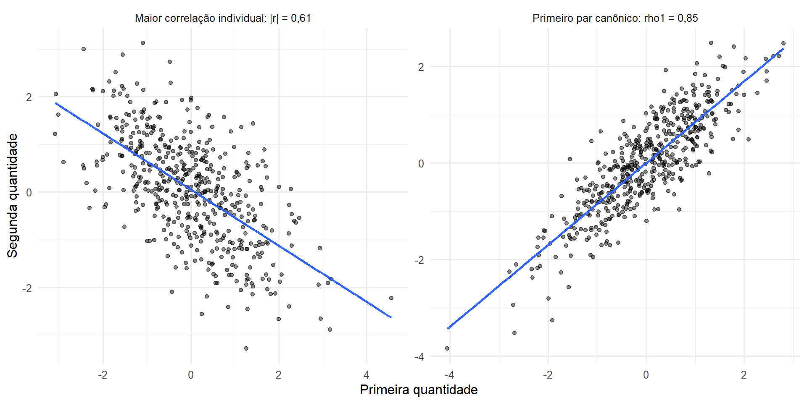
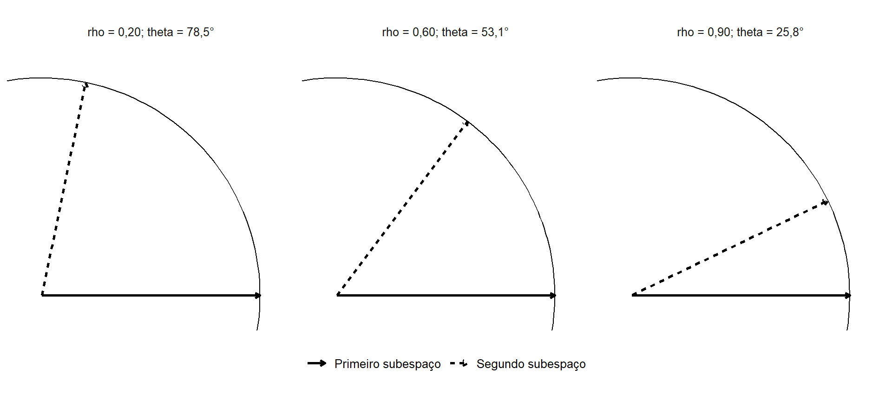

21 Formulação da Correlação Canônica
A Correlação Canônica estuda a associação linear entre dois blocos de variáveis quantitativas observados sobre as mesmas unidades. A técnica constrói uma combinação linear de cada bloco e procura maximizar a correlação entre essas combinações (Anderson, 2003; Johnson; Wichern, 2007; Mardia; Kent; Taylor, 2024).
Considere
\[ \boldsymbol{\mathsf X} \in \mathbb R^p \qquad\text{e}\qquad \boldsymbol{\mathsf Y} \in \mathbb R^q, \]
com
\[ p,q\geq1, \]
definidos sobre a mesma população e com segundos momentos finitos. Os dois blocos desempenham papéis matematicamente simétricos na formulação básica.
As variáveis canônicas são combinações centradas da forma
\[ \mathsf U_j = \mathbf a_j^\top \left( \boldsymbol{\mathsf X} - \boldsymbol{\mu}_X \right) \]
e
\[ \mathsf V_j = \mathbf b_j^\top \left( \boldsymbol{\mathsf Y} - \boldsymbol{\mu}_Y \right). \]
O primeiro par maximiza a correlação entre os dois blocos. Os pares seguintes representam dimensões adicionais de associação linear sob restrições que evitam repetir as dimensões anteriores.
O capítulo mostra como esse problema conduz ao branqueamento das estruturas intrablocos e à SVD da covariância cruzada branqueada. Também desenvolve a formulação equivalente por autovalores generalizados, a interpretação geométrica, as quantidades amostrais e as condições de existência e identificação.
Algoritmos, escolha prática do número de dimensões, diagnósticos extensos, regularização e aplicações serão tratados posteriormente.
A estrutura geral é resumida na Tabela 21.1.
| Elemento | Objeto | Papel na Correlação Canônica |
|---|---|---|
| primeiro bloco | \(\boldsymbol{\mathsf X}\in\mathbb R^p\) | conjunto de variáveis do primeiro domínio |
| segundo bloco | \(\boldsymbol{\mathsf Y}\in\mathbb R^q\) | conjunto de variáveis do segundo domínio |
| associação entre blocos | \(\boldsymbol{\Sigma}_{XY}\in\mathbb R^{p\times q}\) | reúne as covariâncias cruzadas |
| estrutura interna do primeiro bloco | \(\boldsymbol{\Sigma}_{XX}\in\mathbb R^{p\times p}\) | representa variâncias e covariâncias de \(\boldsymbol{\mathsf X}\) |
| estrutura interna do segundo bloco | \(\boldsymbol{\Sigma}_{YY}\in\mathbb R^{q\times q}\) | representa variâncias e covariâncias de \(\boldsymbol{\mathsf Y}\) |
| combinação do primeiro bloco | \(\mathsf U=\mathbf a^\top(\boldsymbol{\mathsf X}-\boldsymbol{\mu}_X)\) | resume linearmente o primeiro bloco |
| combinação do segundo bloco | \(\mathsf V=\mathbf b^\top(\boldsymbol{\mathsf Y}-\boldsymbol{\mu}_Y)\) | resume linearmente o segundo bloco |
| função objetivo | \(\operatorname{Corr}(\mathsf U,\mathsf V)\) | mede a associação entre as duas combinações |
| solução matricial | SVD de uma covariância cruzada branqueada | determina correlações e direções canônicas |
| resultado | \(\rho_1,\ldots,\rho_m\) | correlações canônicas ordenadas |
21.1 O problema de associação entre dois blocos
Considere um primeiro conjunto de características representado por
\[ \boldsymbol{\mathsf X} = (\mathsf X_1,\ldots,\mathsf X_p)^\top \]
e um segundo conjunto representado por
\[ \boldsymbol{\mathsf Y} = (\mathsf Y_1,\ldots,\mathsf Y_q)^\top. \]
Uma análise baseada somente nas correlações
\[ \operatorname{Corr} (\mathsf X_h,\mathsf Y_k), \qquad h=1,\ldots,p, \quad k=1,\ldots,q, \]
descreve associações entre pares específicos de variáveis.
Entretanto, a associação entre os dois blocos pode estar distribuída simultaneamente por várias componentes.
Uma combinação
\[ \mathsf U = a_1 \left( \mathsf X_1-\mu_{X_1} \right) + \cdots + a_p \left( \mathsf X_p-\mu_{X_p} \right) \]
pode concentrar um padrão do primeiro bloco que esteja fortemente associado a outra combinação,
\[ \mathsf V = b_1 \left( \mathsf Y_1-\mu_{Y_1} \right) + \cdots + b_q \left( \mathsf Y_q-\mu_{Y_q} \right), \]
mesmo quando nenhuma correlação bivariada isolada resume adequadamente essa relação.
A questão estatística é, portanto, encontrar
\[ \mathbf a \in \mathbb R^p \]
e
\[ \mathbf b \in \mathbb R^q \]
que façam as duas combinações lineares apresentar a maior correlação possível.
A diferença em relação a outras técnicas baseadas em projeções está na função objetivo.
Na ACP, uma direção é escolhida para maximizar a variabilidade de um único conjunto.
Na formulação de Fisher, uma direção é escolhida para maximizar a separação entre grupos relativamente à dispersão intragrupos.
Na Correlação Canônica, duas direções são escolhidas simultaneamente, uma em cada bloco, com o objetivo de maximizar a associação entre as duas combinações produzidas.
Por isso, a solução não será determinada apenas pela variabilidade existente dentro de cada conjunto nem apenas pelas covariâncias cruzadas. Ela dependerá da relação entre essas duas estruturas.
21.2 Estrutura de covariâncias em blocos
Como os vetores possuem segundos momentos finitos, existem
\[ E \left( \boldsymbol{\mathsf X} \right) = \boldsymbol{\mu}_X \in \mathbb R^p \]
e
\[ E \left( \boldsymbol{\mathsf Y} \right) = \boldsymbol{\mu}_Y \in \mathbb R^q. \]
Pela estrutura da matriz de covariâncias de um vetor particionado estabelecida em Equação 8.15, para o vetor conjunto
\[ \begin{pmatrix} \boldsymbol{\mathsf X}\\ \boldsymbol{\mathsf Y} \end{pmatrix} \in \mathbb R^{p+q}, \]
tem-se
\[ \boldsymbol{\Sigma} = \begin{pmatrix} \boldsymbol{\Sigma}_{XX} & \boldsymbol{\Sigma}_{XY} \\ \boldsymbol{\Sigma}_{YX} & \boldsymbol{\Sigma}_{YY} \end{pmatrix} \in \mathbb R^{(p+q)\times(p+q)}. \tag{21.1}\]
Os blocos diagonais,
\[ \boldsymbol{\Sigma}_{XX} = \operatorname{Cov} \left( \boldsymbol{\mathsf X} \right) \in \mathbb R^{p\times p} \]
e
\[ \boldsymbol{\Sigma}_{YY} = \operatorname{Cov} \left( \boldsymbol{\mathsf Y} \right) \in \mathbb R^{q\times q}, \]
descrevem as estruturas internas de variabilidade e covariância dos dois conjuntos.
O bloco
\[ \boldsymbol{\Sigma}_{XY} = \operatorname{Cov} \left( \boldsymbol{\mathsf X}, \boldsymbol{\mathsf Y} \right) \in \mathbb R^{p\times q} \]
é a matriz de covariâncias cruzadas definida em Definição 8.3.
Sua transposta é
\[ \boldsymbol{\Sigma}_{YX} = \boldsymbol{\Sigma}_{XY}^\top \in \mathbb R^{q\times p}. \]
A matriz
\[ \boldsymbol{\Sigma}_{XY} \]
contém a informação de associação linear que conecta os blocos.
Entretanto, suas entradas não podem ser avaliadas isoladamente da variabilidade interna representada por
\[ \boldsymbol{\Sigma}_{XX} \qquad\text{e}\qquad \boldsymbol{\Sigma}_{YY}. \]
Uma covariância cruzada de determinada magnitude possui significado diferente quando as variâncias das combinações envolvidas também são grandes ou pequenas.
A Correlação Canônica irá separar essas funções. As estruturas internas dos dois blocos serão utilizadas para definir as métricas de normalização, enquanto
\[ \boldsymbol{\Sigma}_{XY} \]
determinará a ligação entre eles.
Na formulação clássica desenvolvida neste capítulo, será assumido
\[ \boldsymbol{\Sigma}_{XX} \succ \mathbf0 \]
e
\[ \boldsymbol{\Sigma}_{YY} \succ \mathbf0. \]
Essas condições garantem variância positiva para toda combinação linear não nula de cada bloco e, posteriormente, a existência de
\[ \boldsymbol{\Sigma}_{XX}^{-1/2} \qquad\text{e}\qquad \boldsymbol{\Sigma}_{YY}^{-1/2}. \]
Não se exige normalidade conjunta para essa construção.
21.2.1 Ausência de associação linear entre os blocos
O resultado estabelecido em Proposição 8.4 fornece, para quaisquer
\[ \mathbf a \in \mathbb R^p \]
e
\[ \mathbf b \in \mathbb R^q, \]
a identidade
\[ \operatorname{Cov} \left[ \mathbf a^\top \left( \boldsymbol{\mathsf X} - \boldsymbol{\mu}_X \right), \mathbf b^\top \left( \boldsymbol{\mathsf Y} - \boldsymbol{\mu}_Y \right) \right] = \mathbf a^\top \boldsymbol{\Sigma}_{XY} \mathbf b. \tag{21.2}\]
Assim, se
\[ \boldsymbol{\Sigma}_{XY} = \mathbf0, \tag{21.3}\]
então
\[ \operatorname{Cov} \left[ \mathbf a^\top \left( \boldsymbol{\mathsf X} - \boldsymbol{\mu}_X \right), \mathbf b^\top \left( \boldsymbol{\mathsf Y} - \boldsymbol{\mu}_Y \right) \right] = 0 \]
para todas as combinações lineares dos dois blocos.
Nesse caso, nenhuma escolha de
\[ \mathbf a \qquad\text{e}\qquad \mathbf b \]
produz covariância linear diferente de zero entre as combinações.
A recíproca também vale.
Se
\[ \mathbf a^\top \boldsymbol{\Sigma}_{XY} \mathbf b = 0 \]
para todos
\[ \mathbf a\in\mathbb R^p \qquad\text{e}\qquad \mathbf b\in\mathbb R^q, \]
então
\[ \boldsymbol{\Sigma}_{XY} = \mathbf0. \]
Por exemplo, tomando os vetores das bases canônicas,
\[ \mathbf a=\mathbf e_h, \qquad \mathbf b=\mathbf e_k, \]
obtém-se
\[ \operatorname{Cov} (\mathsf X_h,\mathsf Y_k) = 0 \]
para todo
\[ h=1,\ldots,p \qquad\text{e}\qquad k=1,\ldots,q. \]
Portanto,
\[ \boldsymbol{\Sigma}_{XY} \]
é o objeto populacional que reúne toda a associação linear entre os dois conjuntos.
Se o vetor conjunto
\[ \begin{pmatrix} \boldsymbol{\mathsf X}\\ \boldsymbol{\mathsf Y} \end{pmatrix} \]
possui distribuição normal multivariada, o resultado de Proposição 9.6 implica
\[ \boldsymbol{\Sigma}_{XY} = \mathbf0 \quad\Longleftrightarrow\quad \boldsymbol{\mathsf X} \perp \boldsymbol{\mathsf Y}. \tag{21.4}\]
Essa equivalência depende da normalidade conjunta.
Fora desse modelo,
\[ \boldsymbol{\Sigma}_{XY} = \mathbf0 \]
significa ausência de associação linear entre os blocos, mas não implica independência em geral.
Essa distinção será mantida ao longo do capítulo: a Correlação Canônica populacional pode ser definida sem normalidade, enquanto a normalidade conjunta acrescenta propriedades probabilísticas e sustenta parte da teoria inferencial clássica.
21.3 Variáveis canônicas e função objetivo
Considere as combinações lineares centradas
\[ \mathsf U = \mathbf a^\top \left( \boldsymbol{\mathsf X} - \boldsymbol{\mu}_X \right) \]
e
\[ \mathsf V = \mathbf b^\top \left( \boldsymbol{\mathsf Y} - \boldsymbol{\mu}_Y \right), \tag{21.5}\]
com
\[ \mathbf a\in\mathbb R^p, \qquad \mathbf b\in\mathbb R^q. \]
Pela variância de combinações lineares estabelecida em Proposição 8.1,
\[ \operatorname{Var} (\mathsf U) = \mathbf a^\top \boldsymbol{\Sigma}_{XX} \mathbf a, \tag{21.6}\]
e
\[ \operatorname{Var} (\mathsf V) = \mathbf b^\top \boldsymbol{\Sigma}_{YY} \mathbf b. \tag{21.7}\]
Além disso, aplicando Proposição 8.4,
\[ \operatorname{Cov} (\mathsf U,\mathsf V) = \mathbf a^\top \boldsymbol{\Sigma}_{XY} \mathbf b. \tag{21.8}\]
Sob
\[ \boldsymbol{\Sigma}_{XX} \succ \mathbf0 \qquad\text{e}\qquad \boldsymbol{\Sigma}_{YY} \succ \mathbf0, \]
se
\[ \mathbf a\neq\mathbf0 \qquad\text{e}\qquad \mathbf b\neq\mathbf0, \]
então
\[ \operatorname{Var}(\mathsf U)>0 \qquad\text{e}\qquad \operatorname{Var}(\mathsf V)>0. \]
A correlação está, portanto, definida e é
\[ \operatorname{Corr} (\mathsf U,\mathsf V) = \frac{ \mathbf a^\top \boldsymbol{\Sigma}_{XY} \mathbf b }{ \sqrt{ \mathbf a^\top \boldsymbol{\Sigma}_{XX} \mathbf a } \sqrt{ \mathbf b^\top \boldsymbol{\Sigma}_{YY} \mathbf b } }. \tag{21.9}\]
Essa expressão contém três estruturas diferentes:
- o numerador mede a covariância entre as combinações dos dois blocos;
- a primeira forma quadrática do denominador mede a variância da combinação de \(\boldsymbol{\mathsf X}\);
- a segunda mede a variância da combinação de \(\boldsymbol{\mathsf Y}\).
A função objetivo é invariante a mudanças de escala dos coeficientes. Se
\[ c\neq0 \qquad\text{e}\qquad d\neq0, \]
então
\[ \operatorname{Corr} \left[ (c\mathbf a)^\top \boldsymbol{\mathsf X}, (d\mathbf b)^\top \boldsymbol{\mathsf Y} \right] = \operatorname{sgn}(cd) \operatorname{Corr} \left( \mathsf U,\mathsf V \right). \]
Portanto, os comprimentos de
\[ \mathbf a \qquad\text{e}\qquad \mathbf b \]
não são determinados pelo problema.
Uma normalização natural é fixar as variâncias das duas combinações:
\[ \mathbf a^\top \boldsymbol{\Sigma}_{XX} \mathbf a = 1 \tag{21.10}\]
e
\[ \mathbf b^\top \boldsymbol{\Sigma}_{YY} \mathbf b = 1. \tag{21.11}\]
Sob essas restrições,
\[ \operatorname{Var}(\mathsf U) = \operatorname{Var}(\mathsf V) = 1 \]
e
\[ \operatorname{Corr} (\mathsf U,\mathsf V) = \operatorname{Cov} (\mathsf U,\mathsf V) = \mathbf a^\top \boldsymbol{\Sigma}_{XY} \mathbf b. \tag{21.12}\]
A procura pela maior correlação transforma-se, assim, em um problema de maximização de uma forma bilinear sujeito a duas restrições quadráticas.
Essa estrutura é diferente do quociente de Rayleigh generalizado utilizado na MANOVA e na Análise Discriminante.
Naquelas técnicas, um único vetor aparece em duas formas quadráticas.
Na Correlação Canônica, existem dois vetores,
\[ \mathbf a \qquad\text{e}\qquad \mathbf b, \]
pertencentes a espaços de dimensões que podem ser diferentes, e o termo que conecta os dois blocos é
\[ \mathbf a^\top \boldsymbol{\Sigma}_{XY} \mathbf b. \]
Essa diferença é a razão matemática pela qual a SVD de uma matriz retangular aparecerá naturalmente na solução.
Definição 21.1 (Primeiro par canônico) Sejam
\[ \boldsymbol{\mathsf X}\in\mathbb R^p \qquad\text{e}\qquad \boldsymbol{\mathsf Y}\in\mathbb R^q \]
vetores aleatórios com segundos momentos finitos, médias
\[ \boldsymbol{\mu}_X = E \left( \boldsymbol{\mathsf X} \right) \]
e
\[ \boldsymbol{\mu}_Y = E \left( \boldsymbol{\mathsf Y} \right), \]
e matrizes
\[ \boldsymbol{\Sigma}_{XX} = \operatorname{Cov} \left( \boldsymbol{\mathsf X} \right) \succ \mathbf0, \]
\[ \boldsymbol{\Sigma}_{YY} = \operatorname{Cov} \left( \boldsymbol{\mathsf Y} \right) \succ \mathbf0 \]
e
\[ \boldsymbol{\Sigma}_{XY} = \operatorname{Cov} \left( \boldsymbol{\mathsf X}, \boldsymbol{\mathsf Y} \right) \in \mathbb R^{p\times q}. \]
O primeiro par canônico é formado por
\[ \mathsf U_1 = \mathbf a_1^\top \left( \boldsymbol{\mathsf X} - \boldsymbol{\mu}_X \right) \]
e
\[ \mathsf V_1 = \mathbf b_1^\top \left( \boldsymbol{\mathsf Y} - \boldsymbol{\mu}_Y \right), \]
em que
\[ \mathbf a_1\in\mathbb R^p \qquad\text{e}\qquad \mathbf b_1\in\mathbb R^q \]
resolvem
\[ \max_{ \mathbf a\in\mathbb R^p,\, \mathbf b\in\mathbb R^q } \; \mathbf a^\top \boldsymbol{\Sigma}_{XY} \mathbf b \tag{21.13}\]
sujeito a
\[ \mathbf a^\top \boldsymbol{\Sigma}_{XX} \mathbf a = 1 \]
e
\[ \mathbf b^\top \boldsymbol{\Sigma}_{YY} \mathbf b = 1. \]
O valor máximo
\[ \rho_1 = \operatorname{Corr} \left( \mathsf U_1, \mathsf V_1 \right) \]
é a primeira correlação canônica.
As restrições definem conjuntos compactos porque
\[ \boldsymbol{\Sigma}_{XX} \succ \mathbf0 \qquad\text{e}\qquad \boldsymbol{\Sigma}_{YY} \succ \mathbf0. \]
Como a função
\[ (\mathbf a,\mathbf b) \longmapsto \mathbf a^\top \boldsymbol{\Sigma}_{XY} \mathbf b \]
é contínua, o máximo existe.
Além disso, por ser uma correlação,
\[ -1 \leq \rho_1 \leq 1. \]
Se uma solução produzir valor negativo, substituir
\[ \mathbf a_1 \]
por
\[ -\mathbf a_1 \]
ou
\[ \mathbf b_1 \]
por
\[ -\mathbf b_1 \]
preserva as restrições e troca o sinal da correlação.
Por convenção, escolhe-se a orientação de modo que
\[ 0 \leq \rho_1 \leq 1. \]
Se
\[ \boldsymbol{\Sigma}_{XY} = \mathbf0, \]
então
\[ \rho_1=0. \]
Reciprocamente, sob a positividade definida dos blocos internos, se
\[ \rho_1=0, \]
então nenhuma combinação linear dos dois blocos possui correlação diferente de zero e, portanto,
\[ \boldsymbol{\Sigma}_{XY} = \mathbf0. \]
A próxima etapa consiste em transformar as duas restrições quadráticas em restrições euclidianas. Esse é o papel do branqueamento por
\[ \boldsymbol{\Sigma}_{XX}^{-1/2} \qquad\text{e}\qquad \boldsymbol{\Sigma}_{YY}^{-1/2}, \]
que permitirá converter o problema bilinear em uma maximização resolvida diretamente pela decomposição em valores singulares.
21.4 Da normalização ao branqueamento
As restrições
\[ \mathbf a^\top \boldsymbol{\Sigma}_{XX} \mathbf a = 1 \]
e
\[ \mathbf b^\top \boldsymbol{\Sigma}_{YY} \mathbf b = 1 \]
mostram que os coeficientes dos dois blocos são normalizados segundo geometrias diferentes.
No primeiro bloco, a forma quadrática
\[ \mathbf a^\top \boldsymbol{\Sigma}_{XX} \mathbf a \]
mede a variância da combinação de \(\boldsymbol{\mathsf X}\), enquanto, no segundo,
\[ \mathbf b^\top \boldsymbol{\Sigma}_{YY} \mathbf b \]
mede a variância da combinação de \(\boldsymbol{\mathsf Y}\).
A solução torna-se mais transparente quando essas duas geometrias são transformadas em geometria euclidiana.
Como
\[ \boldsymbol{\Sigma}_{XX} \succ \mathbf0 \]
e
\[ \boldsymbol{\Sigma}_{YY} \succ \mathbf0, \]
as raízes quadradas principais dessas matrizes são positivas definidas e não singulares, conforme Definição 5.9. Portanto,
\[ \boldsymbol{\Sigma}_{XX}^{-1/2} \]
e
\[ \boldsymbol{\Sigma}_{YY}^{-1/2} \]
existem.
Defina
\[ \mathbf u = \boldsymbol{\Sigma}_{XX}^{1/2} \mathbf a \tag{21.14}\]
e
\[ \mathbf v = \boldsymbol{\Sigma}_{YY}^{1/2} \mathbf b. \tag{21.15}\]
Como as transformações são invertíveis,
\[ \mathbf a = \boldsymbol{\Sigma}_{XX}^{-1/2} \mathbf u \]
e
\[ \mathbf b = \boldsymbol{\Sigma}_{YY}^{-1/2} \mathbf v. \]
As restrições de variância tornam-se
\[ \mathbf u^\top \mathbf u = 1 \]
e
\[ \mathbf v^\top \mathbf v = 1. \tag{21.16}\]
Ao substituir essas expressões em Equação 21.12, obtém-se
\[ \operatorname{Corr} (\mathsf U,\mathsf V) = \mathbf u^\top \left( \boldsymbol{\Sigma}_{XX}^{-1/2} \boldsymbol{\Sigma}_{XY} \boldsymbol{\Sigma}_{YY}^{-1/2} \right) \mathbf v. \tag{21.17}\]
Defina
\[ \mathbf K_{\mathrm{CCA}} = \boldsymbol{\Sigma}_{XX}^{-1/2} \boldsymbol{\Sigma}_{XY} \boldsymbol{\Sigma}_{YY}^{-1/2} \in \mathbb R^{p\times q}. \tag{21.18}\]
A matriz \(\mathbf K_{\mathrm{CCA}}\) reúne a associação cruzada depois que as estruturas internas de covariância dos dois blocos foram padronizadas.
Essa interpretação pode ser vista diretamente sobre os vetores aleatórios. O branqueamento simétrico foi definido em Equação 8.50, e Equação 8.51 estabeleceu que essa transformação produz matriz de covariâncias identidade.
Aplicando-o separadamente aos dois blocos, defina
\[ \boldsymbol{\mathsf X}^{*} = \boldsymbol{\Sigma}_{XX}^{-1/2} \left( \boldsymbol{\mathsf X} - \boldsymbol{\mu}_X \right) \tag{21.19}\]
e
\[ \boldsymbol{\mathsf Y}^{*} = \boldsymbol{\Sigma}_{YY}^{-1/2} \left( \boldsymbol{\mathsf Y} - \boldsymbol{\mu}_Y \right). \tag{21.20}\]
Por Equação 8.51,
\[ \operatorname{Cov} \left( \boldsymbol{\mathsf X}^{*} \right) = \mathbf I_p \]
e
\[ \operatorname{Cov} \left( \boldsymbol{\mathsf Y}^{*} \right) = \mathbf I_q. \] Além disso,
\[ \operatorname{Cov} \left( \boldsymbol{\mathsf X}^{*}, \boldsymbol{\mathsf Y}^{*} \right) = \mathbf K_{\mathrm{CCA}}. \tag{21.21}\]
Portanto, o branqueamento transforma cada bloco em um vetor com matriz de covariâncias identidade e preserva, em
\[ \mathbf K_{\mathrm{CCA}}, \]
a estrutura de associação linear existente entre eles.
É importante interpretar corretamente a expressão “remove a estrutura interna”. O branqueamento não elimina informação dos blocos. Ele incorpora suas variâncias e covariâncias à transformação de coordenadas, de modo que o problema restante possa ser analisado segundo a geometria euclidiana.
A maximização canônica passa então a ser
\[ \max_{ \|\mathbf u\|=\|\mathbf v\|=1 } \; \mathbf u^\top \mathbf K_{\mathrm{CCA}} \mathbf v. \tag{21.22}\]
Temos agora uma forma bilinear entre vetores pertencentes a dois espaços euclidianos que podem possuir dimensões diferentes.
Essa é precisamente a estrutura para a qual a Decomposição em Valores Singulares fornece a solução natural.
21.5 Solução pela Decomposição em Valores Singulares
Defina
\[ m = \min(p,q). \]
A partir da SVD completa definida em Definição 6.3, podem ser retidos os \(m\) pares de vetores singulares associados às posições da diagonal retangular da decomposição.
Escreva
\[ \mathbf K_{\mathrm{CCA}} = \mathbf L \mathbf D_{\rho} \mathbf R^\top, \tag{21.23}\]
em que
\[ \mathbf L = \begin{pmatrix} \mathbf l_1 & \cdots & \mathbf l_m \end{pmatrix} \in \mathbb R^{p\times m}, \]
\[ \mathbf R = \begin{pmatrix} \mathbf r_1 & \cdots & \mathbf r_m \end{pmatrix} \in \mathbb R^{q\times m}, \]
e
\[ \mathbf D_{\rho} = \operatorname{diag} \left( \rho_1,\ldots,\rho_m \right) \in \mathbb R^{m\times m}. \]
Os valores singulares são ordenados de modo que
\[ \rho_1 \geq \rho_2 \geq \cdots \geq \rho_m \geq 0. \tag{21.24}\]
As colunas de \(\mathbf L\) e \(\mathbf R\) são ortonormais:
\[ \mathbf L^\top \mathbf L = \mathbf I_m \]
e
\[ \mathbf R^\top \mathbf R = \mathbf I_m. \]
Para cada
\[ j=1,\ldots,m, \]
as relações singulares são
\[ \mathbf K_{\mathrm{CCA}} \mathbf r_j = \rho_j \mathbf l_j \tag{21.25}\]
e
\[ \mathbf K_{\mathrm{CCA}}^\top \mathbf l_j = \rho_j \mathbf r_j. \tag{21.26}\]
Combinando a desigualdade de Cauchy–Schwarz de Teorema 1.1 com a caracterização do maior valor singular em Proposição 6.6,
\[ \max_{ \|\mathbf u\|=\|\mathbf v\|=1 } \mathbf u^\top \mathbf K_{\mathrm{CCA}} \mathbf v = \rho_1. \]
Uma solução é
\[ \mathbf u_1 = \mathbf l_1 \]
e
\[ \mathbf v_1 = \mathbf r_1. \]
Retornando às coordenadas originais,
\[ \mathbf a_1 = \boldsymbol{\Sigma}_{XX}^{-1/2} \mathbf l_1 \tag{21.27}\]
e
\[ \mathbf b_1 = \boldsymbol{\Sigma}_{YY}^{-1/2} \mathbf r_1. \tag{21.28}\]
Esses coeficientes satisfazem
\[ \mathbf a_1^\top \boldsymbol{\Sigma}_{XX} \mathbf a_1 = 1 \]
e
\[ \mathbf b_1^\top \boldsymbol{\Sigma}_{YY} \mathbf b_1 = 1. \]
A correlação entre as correspondentes variáveis canônicas é
\[ \operatorname{Corr} \left( \mathsf U_1,\mathsf V_1 \right) = \rho_1. \]
Como se trata de uma correlação,
\[ 0 \leq \rho_1 \leq 1. \]
A mesma construção aplicada aos demais pares de vetores singulares produz as dimensões canônicas sucessivas.
Definição 21.2 (Correlações canônicas) Sejam
\[ \boldsymbol{\mathsf X} \in \mathbb R^p \qquad\text{e}\qquad \boldsymbol{\mathsf Y} \in \mathbb R^q \]
vetores aleatórios com segundos momentos finitos e matrizes de covariâncias
\[ \boldsymbol{\Sigma}_{XX} \succ \mathbf0 \]
e
\[ \boldsymbol{\Sigma}_{YY} \succ \mathbf0. \]
Seja
\[ \boldsymbol{\Sigma}_{XY} = \operatorname{Cov} \left( \boldsymbol{\mathsf X}, \boldsymbol{\mathsf Y} \right) \in \mathbb R^{p\times q} \]
e defina
\[ \mathbf K_{\mathrm{CCA}} = \boldsymbol{\Sigma}_{XX}^{-1/2} \boldsymbol{\Sigma}_{XY} \boldsymbol{\Sigma}_{YY}^{-1/2}. \]
Para
\[ m=\min(p,q), \]
as correlações canônicas são os valores singulares
\[ \rho_1 \geq \cdots \geq \rho_m \geq 0 \]
de
\[ \mathbf K_{\mathrm{CCA}}. \]
Para cada \(j\), uma escolha correspondente de coeficientes canônicos é
\[ \mathbf a_j = \boldsymbol{\Sigma}_{XX}^{-1/2} \mathbf l_j \]
e
\[ \mathbf b_j = \boldsymbol{\Sigma}_{YY}^{-1/2} \mathbf r_j, \]
em que
\[ \mathbf l_j \qquad\text{e}\qquad \mathbf r_j \]
são vetores singulares associados a \(\rho_j\).
A definição mostra que as correlações canônicas não são selecionadas dentre as correlações bivariadas originais.
Elas resultam da otimização sobre todas as combinações lineares admissíveis dos dois blocos, depois de incorporadas as estruturas internas de covariância de cada conjunto.
21.6 Pares canônicos sucessivos
Para
\[ j=1,\ldots,m, \]
defina
\[ \mathbf a_j = \boldsymbol{\Sigma}_{XX}^{-1/2} \mathbf l_j \tag{21.29}\]
e
\[ \mathbf b_j = \boldsymbol{\Sigma}_{YY}^{-1/2} \mathbf r_j. \tag{21.30}\]
As variáveis canônicas correspondentes são
\[ \mathsf U_j = \mathbf a_j^\top \left( \boldsymbol{\mathsf X} - \boldsymbol{\mu}_X \right) \]
e
\[ \mathsf V_j = \mathbf b_j^\top \left( \boldsymbol{\mathsf Y} - \boldsymbol{\mu}_Y \right). \tag{21.31}\]
A expressão “pares sucessivos” descreve problemas de otimização sujeitos às restrições impostas pelas dimensões anteriormente obtidas; ela não corresponde simplesmente à ordenação posterior dos valores singulares.
Depois de obtidos os pares
\[ (\mathsf U_1,\mathsf V_1), \ldots, (\mathsf U_{j-1},\mathsf V_{j-1}), \]
o \(j\)-ésimo par maximiza
\[ \operatorname{Corr} (\mathsf U,\mathsf V) \]
entre combinações unitariamente padronizadas que sejam não correlacionadas, dentro de cada bloco, com as variáveis canônicas anteriormente obtidas.
Equivalentemente, para
\[ j\geq2, \]
procura-se maximizar
\[ \mathbf a^\top \boldsymbol{\Sigma}_{XY} \mathbf b \tag{21.32}\]
sujeito a
\[ \mathbf a^\top \boldsymbol{\Sigma}_{XX} \mathbf a = 1, \]
\[ \mathbf b^\top \boldsymbol{\Sigma}_{YY} \mathbf b = 1, \]
e, para
\[ k=1,\ldots,j-1, \]
\[ \mathbf a^\top \boldsymbol{\Sigma}_{XX} \mathbf a_k = 0 \]
e
\[ \mathbf b^\top \boldsymbol{\Sigma}_{YY} \mathbf b_k = 0. \tag{21.33}\]
Depois do branqueamento, essas restrições tornam-se simplesmente
\[ \mathbf u^\top \mathbf l_k = 0 \]
e
\[ \mathbf v^\top \mathbf r_k = 0, \qquad k<j. \]
A caracterização variacional dos valores singulares mostra então que o valor máximo do \(j\)-ésimo problema é
\[ \rho_j. \]
Portanto,
\[ \rho_1 \geq \rho_2 \geq \cdots \geq \rho_m \geq 0 \]
representa uma sequência de associações lineares máximas sujeitas à exclusão das dimensões canônicas já utilizadas.
A ortogonalidade dos vetores singulares produz diretamente a estrutura de covariâncias das variáveis canônicas.
Para
\[ j,\ell \in \{1,\ldots,m\}, \]
tem-se
\[ \begin{aligned} \operatorname{Cov} (\mathsf U_j,\mathsf U_\ell) &= \mathbf a_j^\top \boldsymbol{\Sigma}_{XX} \mathbf a_\ell \\ &= \mathbf l_j^\top \mathbf l_\ell. \end{aligned} \]
Logo,
\[ \operatorname{Cov} (\mathsf U_j,\mathsf U_\ell) = \begin{cases} 1, & j=\ell, \\[4pt] 0, & j\neq\ell. \end{cases} \tag{21.34}\]
Analogamente,
\[ \operatorname{Cov} (\mathsf V_j,\mathsf V_\ell) = \begin{cases} 1, & j=\ell, \\[4pt] 0, & j\neq\ell. \end{cases} \tag{21.35}\]
Para variáveis pertencentes a blocos diferentes,
\[ \begin{aligned} \operatorname{Cov} (\mathsf U_j,\mathsf V_\ell) &= \mathbf l_j^\top \mathbf K_{\mathrm{CCA}} \mathbf r_\ell \\ &= \rho_\ell \mathbf l_j^\top \mathbf l_\ell. \end{aligned} \]
Consequentemente,
\[ \operatorname{Cov} (\mathsf U_j,\mathsf V_\ell) = \begin{cases} \rho_j, & j=\ell, \\[4pt] 0, & j\neq\ell. \end{cases} \tag{21.36}\]
Como todas as variáveis canônicas possuem variância unitária, essas covariâncias são também correlações.
Se
\[ \boldsymbol{\mathsf U} = \begin{pmatrix} \mathsf U_1\\ \vdots\\ \mathsf U_m \end{pmatrix} \]
e
\[ \boldsymbol{\mathsf V} = \begin{pmatrix} \mathsf V_1\\ \vdots\\ \mathsf V_m \end{pmatrix}, \]
as relações anteriores podem ser reunidas como
\[ \operatorname{Cov} \left( \boldsymbol{\mathsf U} \right) = \mathbf I_m, \tag{21.37}\]
\[ \operatorname{Cov} \left( \boldsymbol{\mathsf V} \right) = \mathbf I_m \tag{21.38}\]
e
\[ \operatorname{Cov} \left( \boldsymbol{\mathsf U}, \boldsymbol{\mathsf V} \right) = \mathbf D_{\rho}. \tag{21.39}\]
A transformação canônica produz, portanto, pares ordenados de variáveis com variância unitária.
Dentro de cada bloco, variáveis canônicas pertencentes a dimensões distintas são não correlacionadas.
Entre os blocos, cada
\[ \mathsf U_j \]
possui correlação
\[ \rho_j \]
com
\[ \mathsf V_j \]
e correlação zero com as demais variáveis canônicas do segundo conjunto.
Isso esclarece o significado de sucessão na CCA: cada novo par descreve uma dimensão adicional de associação linear que não repete as dimensões canônicas anteriores.
21.6.1 Número de correlações canônicas positivas
Como
\[ \boldsymbol{\Sigma}_{XX}^{-1/2} \]
e
\[ \boldsymbol{\Sigma}_{YY}^{-1/2} \]
são não singulares,
\[ \operatorname{posto} \left( \mathbf K_{\mathrm{CCA}} \right) = \operatorname{posto} \left( \boldsymbol{\Sigma}_{XY} \right). \tag{21.40}\]
Defina
\[ r_C = \operatorname{posto} \left( \boldsymbol{\Sigma}_{XY} \right). \]
Como
\[ \boldsymbol{\Sigma}_{XY} \in \mathbb R^{p\times q}, \]
tem-se
\[ r_C \leq \min(p,q) = m. \tag{21.41}\]
Pela relação entre posto e valores singulares, exatamente
\[ r_C \]
correlações canônicas são positivas:
\[ \rho_1 \geq \cdots \geq \rho_{r_C} > 0. \]
Se
\[ r_C<m, \]
então
\[ \rho_{r_C+1} = \cdots = \rho_m = 0. \]
Portanto, o número de dimensões com associação linear canônica positiva é determinado pelo posto da matriz de covariâncias cruzadas.
Se
\[ \boldsymbol{\Sigma}_{XY} = \mathbf0, \]
então
\[ r_C=0 \]
e
\[ \rho_1 = \cdots = \rho_m = 0. \]
Nesse caso, não existe associação linear entre nenhuma combinação dos dois blocos.
No outro extremo, se
\[ \rho_j=1, \]
existem combinações lineares unitariamente padronizadas
\[ \mathsf U_j \]
e
\[ \mathsf V_j \]
com correlação perfeita.
Como ambas possuem variância \(1\), após escolha consistente do sinal,
\[ \operatorname{Var} \left( \mathsf U_j-\mathsf V_j \right) = 0. \]
Assim,
\[ \mathsf U_j = \mathsf V_j \]
quase certamente, a menos de uma constante que é nula porque as variáveis canônicas foram construídas a partir de vetores centrados.
Uma correlação canônica igual a \(1\) representa, portanto, uma relação linear exata entre combinações não triviais dos dois blocos.
21.7 Formulação equivalente por autovalores
A SVD é a formulação mais direta da Correlação Canônica porque o problema original envolve simultaneamente dois vetores de coeficientes,
\[ \mathbf a \qquad\text{e}\qquad \mathbf b, \]
e uma matriz retangular,
\[ \boldsymbol{\Sigma}_{XY}. \]
Entretanto, a mesma solução pode ser expressa por problemas de autovalores.
Pela relação entre SVD e os espectros das matrizes de Gram estabelecida em Proposição 6.1, as matrizes
\[ \mathbf K_{\mathrm{CCA}} \mathbf K_{\mathrm{CCA}}^\top \in \mathbb R^{p\times p} \]
e
\[ \mathbf K_{\mathrm{CCA}}^\top \mathbf K_{\mathrm{CCA}} \in \mathbb R^{q\times q} \]
possuem os mesmos autovalores positivos, dados pelos quadrados dos valores singulares de \(\mathbf K_{\mathrm{CCA}}\).
Consequentemente,
\[ \mathbf K_{\mathrm{CCA}} \mathbf K_{\mathrm{CCA}}^\top \mathbf l_j = \rho_j^2 \mathbf l_j \tag{21.42}\]
e
\[ \mathbf K_{\mathrm{CCA}}^\top \mathbf K_{\mathrm{CCA}} \mathbf r_j = \rho_j^2 \mathbf r_j, \tag{21.43}\]
com autovalores positivos
\[ \rho_1^2, \ldots, \rho_{r_C}^2. \] Substituindo Equação 21.18 no primeiro problema,
\[ \boldsymbol{\Sigma}_{XX}^{-1/2} \boldsymbol{\Sigma}_{XY} \boldsymbol{\Sigma}_{YY}^{-1} \boldsymbol{\Sigma}_{YX} \boldsymbol{\Sigma}_{XX}^{-1/2} \mathbf l_j = \rho_j^2 \mathbf l_j. \]
Como
\[ \mathbf l_j = \boldsymbol{\Sigma}_{XX}^{1/2} \mathbf a_j, \]
multiplicar à esquerda por
\[ \boldsymbol{\Sigma}_{XX}^{1/2} \]
produz
\[ \boldsymbol{\Sigma}_{XY} \boldsymbol{\Sigma}_{YY}^{-1} \boldsymbol{\Sigma}_{YX} \mathbf a_j = \rho_j^2 \boldsymbol{\Sigma}_{XX} \mathbf a_j. \tag{21.44}\]
Analogamente,
\[ \boldsymbol{\Sigma}_{YX} \boldsymbol{\Sigma}_{XX}^{-1} \boldsymbol{\Sigma}_{XY} \mathbf b_j = \rho_j^2 \boldsymbol{\Sigma}_{YY} \mathbf b_j. \tag{21.45}\]
Esses são problemas de autovalores generalizados do mesmo tipo definido em Definição 5.11.
No primeiro bloco, o par matricial é
\[ \left( \boldsymbol{\Sigma}_{XY} \boldsymbol{\Sigma}_{YY}^{-1} \boldsymbol{\Sigma}_{YX}, \; \boldsymbol{\Sigma}_{XX} \right), \]
com dimensões
\[ p\times p. \]
No segundo bloco, o par é
\[ \left( \boldsymbol{\Sigma}_{YX} \boldsymbol{\Sigma}_{XX}^{-1} \boldsymbol{\Sigma}_{XY}, \; \boldsymbol{\Sigma}_{YY} \right), \]
com dimensões
\[ q\times q. \]
Os dois problemas possuem os mesmos autovalores positivos,
\[ \rho_1^2, \ldots, \rho_{r_C}^2. \]
Quando
\[ p\neq q, \]
a matriz quadrada de maior dimensão pode possuir autovalores nulos adicionais que não correspondem a novos pares canônicos.
As equações Equação 21.44 e Equação 21.45 não representam duas soluções independentes.
Para cada
\[ j=1,\ldots,m, \]
as relações singulares implicam
\[ \boldsymbol{\Sigma}_{XY} \mathbf b_j = \rho_j \boldsymbol{\Sigma}_{XX} \mathbf a_j \tag{21.46}\]
e
\[ \boldsymbol{\Sigma}_{YX} \mathbf a_j = \rho_j \boldsymbol{\Sigma}_{YY} \mathbf b_j. \tag{21.47}\]
Quando
\[ \rho_j>0, \]
a primeira relação fornece
\[ \mathbf a_j = \frac1{\rho_j} \boldsymbol{\Sigma}_{XX}^{-1} \boldsymbol{\Sigma}_{XY} \mathbf b_j, \]
enquanto a segunda fornece
\[ \mathbf b_j = \frac1{\rho_j} \boldsymbol{\Sigma}_{YY}^{-1} \boldsymbol{\Sigma}_{YX} \mathbf a_j. \]
Assim, em cada dimensão com correlação positiva, a direção de um bloco determina a direção correspondente do outro, respeitadas as normalizações e a convenção de sinal.
A formulação por autovalores conecta a Correlação Canônica aos problemas espectrais utilizados anteriormente em MANOVA e Análise Discriminante.
Há, entretanto, uma diferença estrutural importante.
Na MANOVA e na formulação de Fisher, o problema é introduzido diretamente como uma comparação entre duas formas quadráticas de um mesmo vetor.
Na Correlação Canônica, o ponto de partida é uma maximização bilinear entre dois vetores pertencentes a blocos distintos. O branqueamento transforma as restrições em normas euclidianas, a SVD resolve simultaneamente os dois lados do problema e somente depois a eliminação de um dos vetores produz os problemas de autovalores.
Por isso, os autovalores dessa formulação são
\[ \rho_j^2, \]
isto é, os quadrados das correlações canônicas, enquanto os valores singulares de
\[ \mathbf K_{\mathrm{CCA}} \]
são diretamente
\[ \rho_j. \] ## Geometria da Correlação Canônica
A interpretação geométrica da Correlação Canônica deve acomodar dois blocos que podem possuir dimensões diferentes,
\[ p \neq q. \]
Por isso, não é adequado identificar diretamente os espaços de coeficientes
\[ \mathbb R^p \qquad\text{e}\qquad \mathbb R^q. \]
A geometria relevante pode ser construída no espaço das variáveis aleatórias centradas e quadrado-integráveis.
Considere
\[ L_0^2 = \left\{ \mathsf A: E(\mathsf A)=0, \; E(\mathsf A^2)<\infty \right\}, \]
identificando variáveis aleatórias iguais quase certamente.
Nesse espaço, defina o produto interno
\[ \left\langle \mathsf A,\mathsf B \right\rangle = E \left( \mathsf A\mathsf B \right) = \operatorname{Cov} \left( \mathsf A,\mathsf B \right). \tag{21.48}\]
Como as variáveis são centradas,
\[ \| \mathsf A \|^2 = \left\langle \mathsf A,\mathsf A \right\rangle = \operatorname{Var} (\mathsf A). \]
Defina o subespaço gerado pelas combinações lineares centradas do primeiro bloco,
\[ \mathcal H_X = \operatorname{span} \left\{ \mathsf X_1-E(\mathsf X_1), \ldots, \mathsf X_p-E(\mathsf X_p) \right\} \subset L_0^2, \]
e, analogamente,
\[ \mathcal H_Y = \operatorname{span} \left\{ \mathsf Y_1-E(\mathsf Y_1), \ldots, \mathsf Y_q-E(\mathsf Y_q) \right\} \subset L_0^2. \]
Sob
\[ \boldsymbol{\Sigma}_{XX} \succ \mathbf0, \]
nenhuma combinação linear não trivial das componentes centradas de
\[ \boldsymbol{\mathsf X} \]
possui variância zero. Portanto,
\[ \dim \left( \mathcal H_X \right) = p. \]
Analogamente,
\[ \boldsymbol{\Sigma}_{YY} \succ \mathbf0 \]
implica
\[ \dim \left( \mathcal H_Y \right) = q. \]
Uma variável canônica
\[ \mathsf U = \mathbf a^\top \left( \boldsymbol{\mathsf X} - \boldsymbol{\mu}_X \right) \]
pertence a
\[ \mathcal H_X, \]
enquanto
\[ \mathsf V = \mathbf b^\top \left( \boldsymbol{\mathsf Y} - \boldsymbol{\mu}_Y \right) \]
pertence a
\[ \mathcal H_Y. \]
Sob as normalizações
\[ \operatorname{Var} (\mathsf U) = \operatorname{Var} (\mathsf V) = 1, \]
tem-se
\[ \| \mathsf U \| = \| \mathsf V \| = 1 \]
e
\[ \operatorname{Corr} (\mathsf U,\mathsf V) = \left\langle \mathsf U,\mathsf V \right\rangle. \]
Assim, o primeiro problema canônico pode ser escrito como
\[ \rho_1 = \max_{\substack{ \mathsf U\in\mathcal H_X,\; \|\mathsf U\|=1 \\ \mathsf V\in\mathcal H_Y,\; \|\mathsf V\|=1 }} \left\langle \mathsf U,\mathsf V \right\rangle. \tag{21.49}\]
Essa é precisamente a caracterização do cosseno do menor ângulo principal entre os subespaços
\[ \mathcal H_X \qquad\text{e}\qquad \mathcal H_Y. \]
Se
\[ \theta_1 \in \left[ 0, \frac{\pi}{2} \right] \]
é o primeiro ângulo principal, então
\[ \rho_1 = \cos \theta_1. \tag{21.50}\]
21.7.1 O papel do branqueamento na geometria
A relação com a SVD torna-se particularmente clara quando os blocos são branqueados.
Considere
\[ \boldsymbol{\mathsf X}^{*} = \boldsymbol{\Sigma}_{XX}^{-1/2} \left( \boldsymbol{\mathsf X} - \boldsymbol{\mu}_X \right) \]
e
\[ \boldsymbol{\mathsf Y}^{*} = \boldsymbol{\Sigma}_{YY}^{-1/2} \left( \boldsymbol{\mathsf Y} - \boldsymbol{\mu}_Y \right). \]
Como
\[ \operatorname{Cov} \left( \boldsymbol{\mathsf X}^{*} \right) = \mathbf I_p, \]
as componentes de
\[ \boldsymbol{\mathsf X}^{*} \]
formam um sistema ortonormal em
\[ \mathcal H_X \]
segundo o produto interno de Equação 21.48.
De modo análogo, as componentes de
\[ \boldsymbol{\mathsf Y}^{*} \]
formam um sistema ortonormal em
\[ \mathcal H_Y. \]
A matriz
\[ \mathbf K_{\mathrm{CCA}} = \operatorname{Cov} \left( \boldsymbol{\mathsf X}^{*}, \boldsymbol{\mathsf Y}^{*} \right) \]
é, portanto, a matriz de produtos internos entre duas bases ortonormais desses subespaços.
Sua entrada
\[ \left[ \mathbf K_{\mathrm{CCA}} \right]_{hk} \]
é o produto interno entre a componente branqueada \(h\) do primeiro bloco e a componente branqueada \(k\) do segundo.
A SVD de
\[ \mathbf K_{\mathrm{CCA}} \]
determina os ângulos principais entre
\[ \mathcal H_X \]
e
\[ \mathcal H_Y. \]
Se
\[ m = \min(p,q), \]
existem \(m\) ângulos principais,
\[ 0 \leq \theta_1 \leq \theta_2 \leq \cdots \leq \theta_m \leq \frac{\pi}{2}, \]
e
\[ \rho_j = \cos \theta_j, \qquad j=1,\ldots,m. \tag{21.51}\]
Como o cosseno é decrescente em
\[ \left[ 0, \frac{\pi}{2} \right], \]
a ordenação dos ângulos produz
\[ \rho_1 \geq \rho_2 \geq \cdots \geq \rho_m \geq 0. \]
Se
\[ r_C = \operatorname{posto} \left( \boldsymbol{\Sigma}_{XY} \right), \]
então
\[ \rho_j>0, \qquad j=1,\ldots,r_C, \]
e
\[ \rho_j=0, \qquad j=r_C+1,\ldots,m, \]
quando
\[ r_C<m. \]
Consequentemente,
\[ \theta_j < \frac{\pi}{2}, \qquad j\leq r_C, \]
enquanto as dimensões com correlação canônica nula satisfazem
\[ \theta_j = \frac{\pi}{2}. \]
A interpretação é direta:
- \(\rho_j\) próximo de \(1\) corresponde a um pequeno ângulo principal;
- \(\rho_j\) próximo de \(0\) corresponde a direções próximas da ortogonalidade;
- \(\rho_j=0\) corresponde à ortogonalidade naquela dimensão canônica;
- \(\rho_j=1\) corresponde a ângulo principal igual a zero.
Quando
\[ \rho_j=1, \]
existe uma variável unitária pertencente simultaneamente aos dois subespaços.
Equivalentemente, existem combinações lineares centradas e não triviais dos dois blocos que, após escolha consistente do sinal, coincidem quase certamente.
A geometria fornece, assim, outra interpretação da CCA: a técnica procura sucessivamente as direções de maior alinhamento entre os subespaços lineares gerados pelos dois conjuntos de variáveis.
Essa interpretação é equivalente à formulação por SVD. O branqueamento constrói bases ortonormais em cada subespaço e a SVD da matriz de produtos internos entre essas bases fornece os cossenos dos ângulos principais.
21.8 Interpretação das variáveis canônicas
As correlações
\[ \rho_1,\ldots,\rho_m \]
quantificam a intensidade das associações lineares canônicas entre os dois blocos. A interpretação de cada dimensão exige distinguir os coeficientes que constroem as combinações, as cargas que relacionam as variáveis às combinações de seu próprio bloco e as cargas cruzadas que relacionam cada variável à combinação do outro bloco.
Considere o par \(j\),
\[ \mathsf U_j = \mathbf a_j^\top \left( \boldsymbol{\mathsf X} - \boldsymbol{\mu}_X \right) \]
e
\[ \mathsf V_j = \mathbf b_j^\top \left( \boldsymbol{\mathsf Y} - \boldsymbol{\mu}_Y \right), \]
normalizado de modo que
\[ \operatorname{Var} (\mathsf U_j) = \operatorname{Var} (\mathsf V_j) = 1. \]
21.8.1 Coeficientes canônicos
Os elementos de
\[ \mathbf a_j \]
e
\[ \mathbf b_j \]
são os coeficientes canônicos.
Eles determinam diretamente como as variáveis de cada bloco são combinadas para produzir
\[ \mathsf U_j \qquad\text{e}\qquad \mathsf V_j. \]
Esses coeficientes dependem da escala das variáveis e, principalmente, da estrutura de covariâncias existente dentro de cada bloco.
Quando variáveis de um mesmo conjunto são fortemente associadas, diferentes coeficientes podem compensar-se na construção de uma mesma combinação.
Por isso, a magnitude isolada de um coeficiente não deve ser interpretada como medida direta da associação da correspondente variável com a dimensão canônica.
21.8.2 Associação com a variável canônica do próprio bloco
Definição 21.3 (Cargas canônicas) Sejam
\[ \boldsymbol{\mathsf X}\in\mathbb R^p \qquad\text{e}\qquad \boldsymbol{\mathsf Y}\in\mathbb R^q \]
vetores aleatórios com segundos momentos finitos, médias
\[ \boldsymbol{\mu}_X = E \left( \boldsymbol{\mathsf X} \right), \qquad \boldsymbol{\mu}_Y = E \left( \boldsymbol{\mathsf Y} \right), \]
e matrizes de covariâncias
\[ \boldsymbol{\Sigma}_{XX} \succ \mathbf0 \qquad\text{e}\qquad \boldsymbol{\Sigma}_{YY} \succ \mathbf0. \]
Considere
\[ \mathbf a_j\in\mathbb R^p, \qquad \mathbf b_j\in\mathbb R^q, \]
e as variáveis canônicas
\[ \mathsf U_j = \mathbf a_j^\top \left( \boldsymbol{\mathsf X} - \boldsymbol{\mu}_X \right), \]
\[ \mathsf V_j = \mathbf b_j^\top \left( \boldsymbol{\mathsf Y} - \boldsymbol{\mu}_Y \right), \]
normalizadas de modo que
\[ \operatorname{Var} (\mathsf U_j) = \operatorname{Var} (\mathsf V_j) = 1. \]
A carga canônica da variável \(\mathsf X_h\) sobre \(\mathsf U_j\) é
\[ \ell_{hj}^{(X)} = \operatorname{Corr} \left( \mathsf X_h, \mathsf U_j \right), \qquad h=1,\ldots,p. \tag{21.52}\]
A carga canônica da variável \(\mathsf Y_k\) sobre \(\mathsf V_j\) é
\[ \ell_{kj}^{(Y)} = \operatorname{Corr} \left( \mathsf Y_k, \mathsf V_j \right), \qquad k=1,\ldots,q. \tag{21.53}\]
Como
\[ \operatorname{Var} (\mathsf U_j) = 1, \]
tem-se
\[ \operatorname{Cov} \left( \boldsymbol{\mathsf X}, \mathsf U_j \right) = \boldsymbol{\Sigma}_{XX} \mathbf a_j. \]
Consequentemente,
\[ \ell_{hj}^{(X)} = \frac{ \left[ \boldsymbol{\Sigma}_{XX} \mathbf a_j \right]_h }{ \sqrt{ \left[ \boldsymbol{\Sigma}_{XX} \right]_{hh} } }. \tag{21.54}\]
De modo análogo,
\[ \ell_{kj}^{(Y)} = \frac{ \left[ \boldsymbol{\Sigma}_{YY} \mathbf b_j \right]_k }{ \sqrt{ \left[ \boldsymbol{\Sigma}_{YY} \right]_{kk} } }. \tag{21.55}\]
As cargas são correlações e, portanto,
\[ -1 \leq \ell_{hj}^{(X)} \leq 1 \]
e
\[ -1 \leq \ell_{kj}^{(Y)} \leq 1. \]
Uma carga de grande magnitude indica forte associação linear entre a variável original e a variável canônica de seu próprio bloco.
A Tabela 21.2 sintetiza a diferença de interpretação entre coeficientes e cargas canônicas.
| Quantidade | Interpretação |
|---|---|
| coeficiente canônico | participação da variável na construção da combinação linear |
| carga canônica | correlação da variável original com a combinação obtida |
Um coeficiente numericamente pequeno não implica necessariamente carga pequena, e vice-versa, porque os coeficientes também dependem da estrutura de covariâncias dentro do bloco.
21.8.3 Associação com a variável canônica do outro bloco
Também é possível relacionar uma variável original à variável canônica construída no outro bloco.
Definição 21.4 (Cargas cruzadas) Sejam
\[ \boldsymbol{\mathsf X}\in\mathbb R^p \qquad\text{e}\qquad \boldsymbol{\mathsf Y}\in\mathbb R^q \]
vetores aleatórios com segundos momentos finitos e médias
\[ \boldsymbol{\mu}_X = E \left( \boldsymbol{\mathsf X} \right), \qquad \boldsymbol{\mu}_Y = E \left( \boldsymbol{\mathsf Y} \right). \]
Considere o par canônico
\[ \mathsf U_j = \mathbf a_j^\top \left( \boldsymbol{\mathsf X} - \boldsymbol{\mu}_X \right), \qquad \mathsf V_j = \mathbf b_j^\top \left( \boldsymbol{\mathsf Y} - \boldsymbol{\mu}_Y \right), \]
com
\[ \operatorname{Var} (\mathsf U_j) = \operatorname{Var} (\mathsf V_j) = 1 \]
e
\[ \operatorname{Corr} (\mathsf U_j,\mathsf V_j) = \rho_j. \]
Para
\[ h=1,\ldots,p, \]
a carga cruzada da variável \(\mathsf X_h\) sobre a variável canônica do segundo bloco é
\[ \ell_{hj}^{(X,V)} = \operatorname{Corr} \left( \mathsf X_h, \mathsf V_j \right). \]
Para
\[ k=1,\ldots,q, \]
a carga cruzada da variável \(\mathsf Y_k\) sobre a variável canônica do primeiro bloco é
\[ \ell_{kj}^{(Y,U)} = \operatorname{Corr} \left( \mathsf Y_k, \mathsf U_j \right). \]
A relação
\[ \boldsymbol{\Sigma}_{XY} \mathbf b_j = \rho_j \boldsymbol{\Sigma}_{XX} \mathbf a_j \]
implica
\[ \begin{aligned} \operatorname{Cov} \left( \boldsymbol{\mathsf X}, \mathsf V_j \right) &= \boldsymbol{\Sigma}_{XY} \mathbf b_j \\ &= \rho_j \boldsymbol{\Sigma}_{XX} \mathbf a_j. \end{aligned} \]
Como
\[ \operatorname{Var} (\mathsf U_j) = \operatorname{Var} (\mathsf V_j) = 1, \]
segue que
\[ \ell_{hj}^{(X,V)} = \rho_j \ell_{hj}^{(X)}. \tag{21.56}\]
Analogamente,
\[ \ell_{kj}^{(Y,U)} = \rho_j \ell_{kj}^{(Y)}. \tag{21.57}\]
As cargas cruzadas combinam a associação da variável original com a dimensão canônica de seu próprio bloco e a intensidade da associação entre as duas variáveis canônicas, medida por \(\rho_j\).
Assim, uma variável pode possuir carga canônica elevada e carga cruzada moderada quando
\[ \rho_j \]
é moderado ou pequeno.
21.8.4 Associação bivariada e associação canônica
A Figura 21.1 ilustra por que a Correlação Canônica não se reduz ao exame das correlações cruzadas individuais.
No exemplo, cada variável dos dois blocos compartilha parte de duas fontes de variação. Nenhum par isolado concentra toda a associação disponível, enquanto as combinações canônicas podem reunir simultaneamente a informação distribuída entre várias variáveis.
O painel da esquerda utiliza o par de variáveis originais com maior correlação cruzada em módulo.
O painel da direita utiliza as combinações que maximizam a correlação entre os blocos.
O aumento da associação decorre da possibilidade de combinar informação distribuída entre várias variáveis.
A Correlação Canônica não cria uma associação ausente nos dados. Ela procura as combinações lineares em que a associação representada por
\[ \boldsymbol{\Sigma}_{XY} \]
se manifesta com maior intensidade relativamente às estruturas internas dos dois blocos.
21.9 Variância extraída e redundância
A correlação canônica
\[ \rho_j \]
mede a intensidade da associação entre
\[ \mathsf U_j \qquad\text{e}\qquad \mathsf V_j. \]
Entretanto, ela não informa quanto cada variável canônica representa as variáveis originais de seu próprio bloco.
Para descrever esse segundo aspecto, podem ser utilizadas as cargas canônicas.
21.9.1 Variância extraída
Para o primeiro bloco, defina
\[ VE_{X,j} = \frac{1}{p} \sum_{h=1}^{p} \left( \ell_{hj}^{(X)} \right)^2. \tag{21.58}\]
Para o segundo bloco,
\[ VE_{Y,j} = \frac{1}{q} \sum_{k=1}^{q} \left( \ell_{kj}^{(Y)} \right)^2. \tag{21.59}\]
Como cada carga é uma correlação, seu quadrado representa a proporção da variância da correspondente variável padronizada associada linearmente à variável canônica considerada.
Assim,
\[ VE_{X,j} \]
e
\[ VE_{Y,j} \]
são médias dessas proporções dentro de cada bloco.
Essas quantidades não são determinadas apenas por
\[ \rho_j. \]
Duas variáveis canônicas podem possuir correlação elevada entre si e, ainda assim, apresentar cargas pequenas em muitas das variáveis originais.
21.9.2 Índice de redundância
As cargas cruzadas permitem combinar a representação interna de um bloco com a associação canônica entre os blocos.
Como
\[ \ell_{hj}^{(X,V)} = \rho_j \ell_{hj}^{(X)}, \]
tem-se
\[ \begin{aligned} \frac1p \sum_{h=1}^{p} \left( \ell_{hj}^{(X,V)} \right)^2 &= \frac1p \sum_{h=1}^{p} \rho_j^2 \left( \ell_{hj}^{(X)} \right)^2 \\ &= VE_{X,j} \rho_j^2. \end{aligned} \]
Define-se, portanto,
\[ Red_{X\mid Y,j} = VE_{X,j} \rho_j^2. \tag{21.60}\]
Analogamente,
\[ Red_{Y\mid X,j} = VE_{Y,j} \rho_j^2. \tag{21.61}\]
Os índices de redundância distinguem duas informações:
- \(VE_{X,j}\) ou \(VE_{Y,j}\) resume quanto a dimensão canônica representa, em média, as variáveis padronizadas do próprio bloco;
- \(\rho_j^2\) incorpora quanto essa dimensão está linearmente associada à dimensão correspondente do outro bloco.
A redundância não deve ser interpretada como efeito causal nem como coeficiente geral de determinação entre os dois vetores aleatórios.
Ela é uma medida descritiva construída a partir das cargas e da correlação de um par canônico específico.
Uma correlação canônica elevada pode coexistir com redundância baixa se as duas combinações estiverem fortemente associadas entre si, mas representarem apenas uma parcela pequena das variáveis originais.
Neste capítulo, variância extraída e redundância são utilizadas apenas em nível conceitual. Critérios operacionais para julgar magnitudes, selecionar pares ou avaliar estabilidade serão tratados posteriormente.
21.9.3 Correlação canônica e ângulo
A interpretação de Equação 21.51 é ilustrada na Figura 21.2.
Depois que as estruturas internas dos dois blocos são incorporadas pelo branqueamento, as correlações canônicas podem ser interpretadas como cossenos de ângulos principais entre os subespaços gerados pelos dois conjuntos.

Cada painel representa, em um plano auxiliar, duas direções unitárias cujo produto interno é
\[ \rho. \]
Como
\[ \rho = \cos\theta, \]
correlações maiores correspondem a ângulos menores.
A figura é apenas uma representação bidimensional da relação angular. Os ângulos principais da CCA são definidos entre
\[ \mathcal H_X \qquad\text{e}\qquad \mathcal H_Y \]
no espaço
\[ L_0^2, \]
e não entre os espaços de coeficientes
\[ \mathbb R^p \qquad\text{e}\qquad \mathbb R^q. \]
21.10 Formulação amostral
A solução populacional depende das matrizes
\[ \boldsymbol{\Sigma}_{XX}, \qquad \boldsymbol{\Sigma}_{XY}, \qquad \boldsymbol{\Sigma}_{YY}. \]
As matrizes de covariâncias amostrais foram definidas como estatísticas aleatórias em Definição 10.14, enquanto suas realizações observadas foram definidas em Definição 8.11.
Antes da observação dos dados,
\[ \boldsymbol{\mathsf S}_{XX}, \qquad \boldsymbol{\mathsf S}_{XY}, \qquad \boldsymbol{\mathsf S}_{YY} \]
são estatísticas aleatórias utilizadas para estimar
\[ \boldsymbol{\Sigma}_{XX}, \qquad \boldsymbol{\Sigma}_{XY}, \qquad \boldsymbol{\Sigma}_{YY}. \]
Após a observação,
\[ \mathbf S_{XX}, \qquad \mathbf S_{XY}, \qquad \mathbf S_{YY} \]
são suas realizações.
Para uma amostra de
\[ n\geq2 \]
unidades observadas simultaneamente nos dois blocos, organize os dados nas matrizes
\[ \mathbf X \in \mathbb R^{n\times p} \]
e
\[ \mathbf Y \in \mathbb R^{n\times q}. \]
Se
\[ \mathbf X_c \]
e
\[ \mathbf Y_c \]
denotam as matrizes centralizadas, então, pela definição de matriz de covariâncias observada,
\[ \mathbf S_{XX} = \frac1{n-1} \mathbf X_c^\top \mathbf X_c \]
e
\[ \mathbf S_{YY} = \frac1{n-1} \mathbf Y_c^\top \mathbf Y_c. \]
A covariância cruzada observada definida em Definição 8.13 é
\[ \mathbf S_{XY} = \frac1{n-1} \mathbf X_c^\top \mathbf Y_c \in \mathbb R^{p\times q}, \]
e sua contraparte como estatística aleatória foi definida em Definição 10.16. Sua contraparte como estatística aleatória,
\[ \boldsymbol{\mathsf S}_{XY}, \]
foi definida em Definição 10.16.
Na formulação amostral clássica, suponha
\[ \mathbf S_{XX} \succ \mathbf0 \]
e
\[ \mathbf S_{YY} \succ \mathbf0. \]
Define-se então
\[ \widehat{\mathbf K}_{\mathrm{CCA}} = \mathbf S_{XX}^{-1/2} \mathbf S_{XY} \mathbf S_{YY}^{-1/2} \in \mathbb R^{p\times q}. \tag{21.62}\]
Se
\[ m = \min(p,q), \]
escreva a decomposição
\[ \widehat{\mathbf K}_{\mathrm{CCA}} = \widehat{\mathbf L} \widehat{\mathbf D}_{\rho} \widehat{\mathbf R}^{\top}, \tag{21.63}\]
em que
\[ \widehat{\mathbf L} \in \mathbb R^{p\times m}, \]
\[ \widehat{\mathbf R} \in \mathbb R^{q\times m} \]
possuem colunas ortonormais e
\[ \widehat{\mathbf D}_{\rho} = \operatorname{diag} \left( \widehat\rho_1, \ldots, \widehat\rho_m \right), \]
com
\[ 1 \geq \widehat\rho_1 \geq \cdots \geq \widehat\rho_m \geq 0. \]
Os valores
\[ \widehat\rho_j \]
são as correlações canônicas amostrais.
Como as duas matrizes utilizadas no branqueamento são invertíveis,
\[ \operatorname{posto} \left( \widehat{\mathbf K}_{\mathrm{CCA}} \right) = \operatorname{posto} \left( \mathbf S_{XY} \right). \]
Defina
\[ \widehat r_C = \operatorname{posto} \left( \mathbf S_{XY} \right). \]
Então exatamente
\[ \widehat r_C \]
correlações canônicas amostrais são positivas.
Os coeficientes canônicos amostrais são
\[ \widehat{\mathbf a}_j = \mathbf S_{XX}^{-1/2} \widehat{\mathbf l}_j, \tag{21.64}\]
e
\[ \widehat{\mathbf b}_j = \mathbf S_{YY}^{-1/2} \widehat{\mathbf r}_j, \tag{21.65}\]
para
\[ j=1,\ldots,m. \]
Eles satisfazem
\[ \widehat{\mathbf a}_j^\top \mathbf S_{XX} \widehat{\mathbf a}_\ell = \delta_{j\ell} \]
e
\[ \widehat{\mathbf b}_j^\top \mathbf S_{YY} \widehat{\mathbf b}_\ell = \delta_{j\ell}. \]
Os escores canônicos observados são
\[ \widehat{\mathbf u}_j = \mathbf X_c \widehat{\mathbf a}_j \in \mathbb R^n \tag{21.66}\]
e
\[ \widehat{\mathbf v}_j = \mathbf Y_c \widehat{\mathbf b}_j \in \mathbb R^n. \tag{21.67}\]
Como
\[ \mathbf S_{XX} = \frac1{n-1} \mathbf X_c^\top \mathbf X_c, \]
tem-se
\[ \frac1{n-1} \widehat{\mathbf u}_j^\top \widehat{\mathbf u}_\ell = \delta_{j\ell}. \]
Analogamente,
\[ \frac1{n-1} \widehat{\mathbf v}_j^\top \widehat{\mathbf v}_\ell = \delta_{j\ell}. \]
Além disso,
\[ \begin{aligned} \frac1{n-1} \widehat{\mathbf u}_j^\top \widehat{\mathbf v}_\ell &= \widehat{\mathbf a}_j^\top \mathbf S_{XY} \widehat{\mathbf b}_\ell \\ &= \widehat\rho_j \delta_{j\ell}. \end{aligned} \]
Portanto, os escores do mesmo par possuem correlação amostral
\[ \widehat\rho_j, \]
enquanto escores pertencentes a pares canônicos distintos são não correlacionados segundo a estrutura construída pela solução.
21.10.1 População e amostra
A distinção entre os dois níveis deve ser mantida.
Na população, a técnica é determinada por
\[ \boldsymbol{\Sigma}_{XX}, \qquad \boldsymbol{\Sigma}_{XY}, \qquad \boldsymbol{\Sigma}_{YY}, \]
e produz
\[ \rho_j, \qquad \mathbf a_j, \qquad \mathbf b_j. \]
Na amostra observada, utilizam-se
\[ \mathbf S_{XX}, \qquad \mathbf S_{XY}, \qquad \mathbf S_{YY}, \]
obtendo
\[ \widehat\rho_j, \qquad \widehat{\mathbf a}_j, \qquad \widehat{\mathbf b}_j. \]
Antes da observação dos dados, a aplicação da mesma construção às matrizes aleatórias
\[ \boldsymbol{\mathsf S}_{XX}, \qquad \boldsymbol{\mathsf S}_{XY}, \qquad \boldsymbol{\mathsf S}_{YY} \]
produz estatísticas aleatórias.
Nesta seção,
\[ \widehat\rho_j, \qquad \widehat{\mathbf a}_j, \qquad \widehat{\mathbf b}_j \]
denotam suas realizações após a observação da amostra e são utilizadas como estimativas das estruturas canônicas populacionais, respeitadas as condições de identificação das raízes e dos subespaços canônicos.
A forma matemática da solução permanece a mesma: primeiro são consideradas as estruturas internas dos dois blocos, depois a covariância cruzada é expressa nas geometrias branqueadas e, finalmente, a SVD identifica as associações lineares máximas.
A existência dessas operações na população e na amostra, bem como a identificação das direções quando existem raízes repetidas, serão examinadas a seguir.
21.11 Invariância, existência e identificação
A formulação clássica da Correlação Canônica utiliza inversas e raízes quadradas inversas das matrizes de covariâncias intrablocos. Por isso, antes de interpretar coeficientes e correlações canônicas, é necessário distinguir três questões:
- quais mudanças de representação preservam a solução;
- quando a solução clássica existe;
- quais elementos da solução são identificados unicamente.
21.11.1 Invariância a transformações lineares não singulares
Uma propriedade estrutural importante da CCA é que as correlações canônicas não dependem da base utilizada para representar cada bloco, desde que a mudança de coordenadas seja invertível.
Considere transformações
\[ \boldsymbol{\mathsf X}^{\dagger} = \mathbf P \boldsymbol{\mathsf X} \]
e
\[ \boldsymbol{\mathsf Y}^{\dagger} = \mathbf Q \boldsymbol{\mathsf Y}, \]
em que
\[ \mathbf P \in \mathbb R^{p\times p} \]
e
\[ \mathbf Q \in \mathbb R^{q\times q}. \]
Quando
\[ \mathbf P \]
e
\[ \mathbf Q \]
são não singulares, cada transformação apenas fornece uma nova base para o mesmo espaço de combinações lineares do respectivo bloco.
Proposição 21.1 (Invariância das correlações canônicas) Sejam
\[ \boldsymbol{\mathsf X} \in \mathbb R^p \qquad\text{e}\qquad \boldsymbol{\mathsf Y} \in \mathbb R^q \]
vetores aleatórios com segundos momentos finitos e matrizes de covariâncias
\[ \boldsymbol{\Sigma}_{XX} \succ \mathbf0 \qquad\text{e}\qquad \boldsymbol{\Sigma}_{YY} \succ \mathbf0. \]
Considere matrizes não singulares
\[ \mathbf P \in \mathbb R^{p\times p} \]
e
\[ \mathbf Q \in \mathbb R^{q\times q}, \]
e defina
\[ \boldsymbol{\mathsf X}^{\dagger} = \mathbf P \boldsymbol{\mathsf X}, \qquad \boldsymbol{\mathsf Y}^{\dagger} = \mathbf Q \boldsymbol{\mathsf Y}. \]
Então
\[ \left( \boldsymbol{\mathsf X}, \boldsymbol{\mathsf Y} \right) \]
e
\[ \left( \boldsymbol{\mathsf X}^{\dagger}, \boldsymbol{\mathsf Y}^{\dagger} \right) \]
possuem as mesmas correlações canônicas, incluindo suas multiplicidades.
Comprovação. Como
\[ E \left( \boldsymbol{\mathsf X}^{\dagger} \right) = \mathbf P \boldsymbol{\mu}_X, \]
as combinações lineares centradas do bloco transformado são
\[ \mathbf a_{\dagger}^{\top} \left( \boldsymbol{\mathsf X}^{\dagger} - E( \boldsymbol{\mathsf X}^{\dagger} ) \right) = \mathbf a_{\dagger}^{\top} \mathbf P \left( \boldsymbol{\mathsf X} - \boldsymbol{\mu}_X \right). \]
Para qualquer
\[ \mathbf a \in \mathbb R^p, \]
escolha
\[ \mathbf a_{\dagger} = \mathbf P^{-\top} \mathbf a. \]
Então
\[ \mathbf a_{\dagger}^{\top} \left( \boldsymbol{\mathsf X}^{\dagger} - E( \boldsymbol{\mathsf X}^{\dagger} ) \right) = \mathbf a^\top \left( \boldsymbol{\mathsf X} - \boldsymbol{\mu}_X \right). \]
Como
\[ \mathbf P \]
é não singular, a correspondência
\[ \mathbf a \longleftrightarrow \mathbf a_{\dagger} \]
é bijetiva. Portanto, o conjunto de todas as combinações lineares centradas possíveis do primeiro bloco é preservado.
Analogamente, com
\[ \mathbf b_{\dagger} = \mathbf Q^{-\top} \mathbf b, \]
tem-se
\[ \mathbf b_{\dagger}^{\top} \left( \boldsymbol{\mathsf Y}^{\dagger} - E( \boldsymbol{\mathsf Y}^{\dagger} ) \right) = \mathbf b^\top \left( \boldsymbol{\mathsf Y} - \boldsymbol{\mu}_Y \right). \]
Assim, os dois problemas possuem exatamente os mesmos pares possíveis de variáveis lineares centradas. Consequentemente, os máximos sucessivos de suas correlações são iguais.
A invariância inclui, como casos particulares:
- mudanças de unidades;
- reescalonamentos por constantes não nulas;
- rotações;
- mudanças invertíveis de base dentro de cada bloco.
Além disso, adicionar constantes às variáveis não altera a CCA, porque as combinações são construídas a partir dos vetores centralizados.
Portanto, padronizar as variáveis por desvios-padrão positivos não altera as correlações canônicas.
O que se modifica são os coeficientes utilizados para expressar as mesmas combinações na nova base.
Se
\[ \mathbf a_j \]
é um vetor de coeficientes no sistema original, então o vetor correspondente no sistema transformado é
\[ \mathbf a_j^{\dagger} = \mathbf P^{-\top} \mathbf a_j. \tag{21.68}\]
Analogamente,
\[ \mathbf b_j^{\dagger} = \mathbf Q^{-\top} \mathbf b_j. \tag{21.69}\]
Por isso, as correlações canônicas descrevem a associação entre os espaços lineares gerados pelos blocos, enquanto os coeficientes dependem das coordenadas utilizadas para representar esses espaços.
Essa distinção também explica por que coeficientes canônicos obtidos em escalas diferentes não devem ser comparados diretamente como medidas absolutas de importância.
21.12 Existência da solução clássica
Na população, a construção por branqueamento exige
\[ \boldsymbol{\Sigma}_{XX} \succ \mathbf0 \]
e
\[ \boldsymbol{\Sigma}_{YY} \succ \mathbf0. \]
Essas condições garantem a existência de
\[ \boldsymbol{\Sigma}_{XX}^{-1}, \qquad \boldsymbol{\Sigma}_{YY}^{-1}, \]
e de
\[ \boldsymbol{\Sigma}_{XX}^{-1/2}, \qquad \boldsymbol{\Sigma}_{YY}^{-1/2}. \]
Se existir
\[ \mathbf a\neq\mathbf0 \]
tal que
\[ \mathbf a^\top \boldsymbol{\Sigma}_{XX} \mathbf a = 0, \]
então a combinação
\[ \mathbf a^\top \left( \boldsymbol{\mathsf X} - \boldsymbol{\mu}_X \right) \]
possui variância zero e o primeiro bloco contém uma dependência linear populacional exata.
Nesse caso,
\[ \boldsymbol{\Sigma}_{XX} \]
é singular.
O mesmo argumento vale para
\[ \boldsymbol{\Sigma}_{YY}. \]
A formulação clássica apresentada neste capítulo pressupõe que essas redundâncias exatas não estejam presentes na representação adotada.
21.12.1 Existência na amostra
21.12.2 Existência na amostra
O limite de posto da matriz de covariâncias observada foi estabelecido em Equação 8.63. Aplicando-o separadamente aos dois blocos,
\[ \operatorname{posto} \left( \mathbf S_{XX} \right) \leq \min(p,n-1) \]
e
\[ \operatorname{posto} \left( \mathbf S_{YY} \right) \leq \min(q,n-1). \]
Consequentemente,
\[ n-1 \geq p \]
e
\[ n-1 \geq q \tag{21.70}\]
são condições necessárias para que
\[ \mathbf S_{XX} \]
e
\[ \mathbf S_{YY} \]
possam possuir posto completo.
Essas condições não são suficientes para um conjunto de dados arbitrário.
Mesmo quando
\[ n-1\geq p \qquad\text{e}\qquad n-1\geq q, \]
relações lineares exatas entre as variáveis de um bloco podem tornar sua matriz de covariâncias singular.
Quando
\[ p>n-1 \]
ou
\[ q>n-1, \]
a singularidade é inevitável e a formulação clássica baseada nas inversas das matrizes amostrais não pode ser utilizada diretamente.
Pseudoinversas, regularização e versões da CCA destinadas a situações de alta dimensão constituem formulações adicionais e não serão desenvolvidas neste capítulo.
21.12.3 Dimensão conjunta e correlações amostrais iguais a um
A invertibilidade separada de
\[ \mathbf S_{XX} \]
e
\[ \mathbf S_{YY} \]
não elimina todos os problemas associados à alta dimensão.
As colunas de
\[ \mathbf X_c \]
e
\[ \mathbf Y_c \]
pertencem ao subespaço
\[ \mathcal H_n = \left\{ \mathbf z \in \mathbb R^n: \mathbf1_n^\top \mathbf z = 0 \right\}, \]
cuja dimensão é
\[ n-1. \]
Suponha que
\[ \mathbf S_{XX} \]
e
\[ \mathbf S_{YY} \]
tenham posto completo. Então
\[ \dim \left[ \operatorname{Col} (\mathbf X_c) \right] = p \]
e
\[ \dim \left[ \operatorname{Col} (\mathbf Y_c) \right] = q. \]
Como ambos são subespaços de
\[ \mathcal H_n, \]
a fórmula da dimensão da soma fornece
\[ \begin{aligned} & \dim \left[ \operatorname{Col} (\mathbf X_c) \cap \operatorname{Col} (\mathbf Y_c) \right] \\ &= p+q - \dim \left[ \operatorname{Col} (\mathbf X_c) + \operatorname{Col} (\mathbf Y_c) \right] \\ &\geq p+q-(n-1). \end{aligned} \tag{21.71}\]
Assim, se
\[ p+q > n-1, \tag{21.72}\]
a interseção é necessariamente não trivial.
Existe, portanto,
\[ \mathbf z\neq\mathbf0 \]
tal que
\[ \mathbf z = \mathbf X_c\mathbf a = \mathbf Y_c\mathbf b \]
para determinados vetores não nulos
\[ \mathbf a \in \mathbb R^p \qquad\text{e}\qquad \mathbf b \in \mathbb R^q. \]
As duas combinações amostrais são idênticas e, portanto, possuem correlação igual a
\[ 1. \]
Mais precisamente, sob as hipóteses anteriores, existem pelo menos
\[ p+q-(n-1) \]
dimensões comuns sempre que essa quantidade é positiva. Consequentemente, a solução amostral pode conter várias correlações canônicas exatamente iguais a \(1\).
Esse resultado é importante porque mostra que uma correlação canônica amostral perfeita pode ser consequência da própria relação entre dimensão e tamanho amostral, e não necessariamente evidência de uma relação populacional perfeita entre os blocos.
A existência algébrica de uma solução não garante, portanto, que sua estimação seja informativa ou estável.
21.12.4 Multicolinearidade e condicionamento
Mesmo quando
\[ \mathbf S_{XX} \]
e
\[ \mathbf S_{YY} \]
são formalmente positivas definidas, autovalores muito pequenos tornam
\[ \mathbf S_{XX}^{-1/2} \]
ou
\[ \mathbf S_{YY}^{-1/2} \]
sensíveis a pequenas perturbações nos dados.
Essa sensibilidade pode afetar:
- os coeficientes canônicos;
- os subespaços estimados;
- as correlações canônicas, especialmente quando a separação entre valores singulares é pequena.
Não existe garantia geral de que as combinações canônicas permaneçam estáveis quando as matrizes intrablocos são mal condicionadas.
O problema é particularmente importante porque a CCA utiliza simultaneamente:
\[ \mathbf S_{XX}^{-1/2}, \qquad \mathbf S_{XY} \qquad\text{e}\qquad \mathbf S_{YY}^{-1/2}. \]
Assim, instabilidade dentro de qualquer um dos dois blocos pode propagar-se para a matriz
\[ \widehat{\mathbf K}_{\mathrm{CCA}}. \]
Diagnósticos de condicionamento, regularização e versões esparsas ou penalizadas pertencem à etapa metodológica posterior.
21.13 Identificação das direções canônicas
As correlações canônicas são os valores singulares de
\[ \mathbf K_{\mathrm{CCA}}. \]
Por isso, sua identificação segue as propriedades da SVD desenvolvidas no Módulo 1.
21.13.1 Correlação canônica simples
Suponha que
\[ \rho_j>0 \]
seja um valor singular simples.
O par de vetores singulares
\[ (\mathbf l_j,\mathbf r_j) \]
é determinado até uma mudança simultânea de sinal:
\[ (\mathbf l_j,\mathbf r_j) \]
e
\[ (-\mathbf l_j,-\mathbf r_j) \]
satisfazem as mesmas relações singulares.
Consequentemente,
\[ (\mathbf a_j,\mathbf b_j) \]
e
\[ (-\mathbf a_j,-\mathbf b_j) \]
produzem
\[ (\mathsf U_j,\mathsf V_j) \]
e
\[ (-\mathsf U_j,-\mathsf V_j). \]
A correlação permanece
\[ \rho_j. \]
Portanto, a orientação dos eixos canônicos não possui significado intrínseco.
Uma convenção de sinal pode ser adotada para facilitar a apresentação, mas não altera a solução matemática.
21.13.2 Correlações repetidas
Suponha que uma correlação canônica positiva
\[ \rho \]
possua multiplicidade
\[ d>1. \]
Os vetores singulares individuais associados não são únicos. Se
\[ \mathbf L_{\rho} \in \mathbb R^{p\times d} \]
e
\[ \mathbf R_{\rho} \in \mathbb R^{q\times d} \]
são bases ortonormais dos subespaços singulares correspondentes, então, para qualquer matriz ortogonal
\[ \mathbf Q \in \mathbb R^{d\times d}, \]
as bases
\[ \mathbf L_{\rho}\mathbf Q \]
e
\[ \mathbf R_{\rho}\mathbf Q \]
produzem outra representação válida do mesmo bloco canônico.
A rotação é coordenada nos dois lados porque
\[ \mathbf K_{\mathrm{CCA}} \mathbf R_{\rho} = \rho \mathbf L_{\rho}. \]
Assim, os objetos identificados são:
- o subespaço canônico do primeiro bloco;
- o subespaço canônico correspondente do segundo bloco;
- a correlação canônica comum \(\rho\).
Os eixos individuais escolhidos dentro desses subespaços dependem da base adotada e não possuem identificação própria.
Essa distinção é particularmente importante para interpretar:
- coeficientes;
- cargas;
- cargas cruzadas;
associados individualmente a dimensões com correlações repetidas.
21.13.3 Correlações nulas
Quando
\[ \rho_j=0, \]
as relações
\[ \mathbf K_{\mathrm{CCA}} \mathbf r_j = \mathbf0 \]
e
\[ \mathbf K_{\mathrm{CCA}}^\top \mathbf l_j = \mathbf0 \]
não determinam uma associação positiva entre um par particular de direções.
Os subespaços associados ao valor singular zero podem possuir alta dimensão e suas bases não são, em geral, únicas.
Por isso, a interpretação substantiva concentra-se normalmente nas dimensões associadas às correlações positivas.
21.13.4 População e amostra
A mesma questão aparece na estimação.
Quando
\[ \rho_j \]
é positiva, simples e separada das demais correlações canônicas, existe uma correspondência natural entre a dimensão populacional e a correspondente dimensão amostral, a menos das convenções de sinal.
Quando valores populacionais são repetidos ou muito próximos, coeficientes amostrais individuais podem variar consideravelmente mesmo que o subespaço estimado permaneça próximo do subespaço populacional.
Portanto, a interpretação de coeficientes individuais exige considerar a identificação espectral da solução.
21.14 Pressupostos e limites
A Correlação Canônica pode ser formulada a partir de momentos de segunda ordem. Suas condições algébricas devem ser distinguidas das hipóteses necessárias à inferência clássica.
21.14.1 Existência de segundos momentos
Para definir
\[ \boldsymbol{\Sigma}_{XX}, \qquad \boldsymbol{\Sigma}_{XY} \qquad\text{e}\qquad \boldsymbol{\Sigma}_{YY}, \]
é suficiente assumir, por exemplo,
\[ E \left( \| \boldsymbol{\mathsf X} \|^2 \right) < \infty \]
e
\[ E \left( \| \boldsymbol{\mathsf Y} \|^2 \right) < \infty. \]
A técnica descreve associação linear entre os blocos por meio dessas covariâncias.
Relações não lineares que não produzam estrutura de covariância cruzada podem não ser detectadas.
Em particular,
\[ \boldsymbol{\Sigma}_{XY} = \mathbf0 \]
significa ausência de associação linear entre todas as combinações dos dois blocos, mas não implica independência em geral.
21.14.2 Não singularidade dentro dos blocos
A formulação clássica por branqueamento exige
\[ \boldsymbol{\Sigma}_{XX} \succ \mathbf0 \]
e
\[ \boldsymbol{\Sigma}_{YY} \succ \mathbf0. \]
Na amostra, exige-se analogamente
\[ \mathbf S_{XX} \succ \mathbf0 \]
e
\[ \mathbf S_{YY} \succ \mathbf0. \]
Essas são condições algébricas para as inversas e raízes quadradas inversas utilizadas na solução clássica.
Elas não decorrem da normalidade.
21.14.3 Normalidade multivariada
A normalidade conjunta de
\[ \begin{pmatrix} \boldsymbol{\mathsf X}\\ \boldsymbol{\mathsf Y} \end{pmatrix} \]
não é necessária para definir:
\[ \rho_j, \qquad \mathbf a_j, \qquad \mathbf b_j, \]
nem para obter a solução pela SVD das matrizes de covariâncias populacionais.
A normalidade acrescenta propriedades probabilísticas.
Em particular, sob normalidade conjunta,
\[ \boldsymbol{\Sigma}_{XY} = \mathbf0 \]
é equivalente à independência dos blocos, conforme Equação 21.4.
Além disso, a normalidade sustenta a teoria inferencial clássica para hipóteses sobre as correlações canônicas e sobre a independência entre os conjuntos.
Essas distribuições de referência e suas transformações não serão desenvolvidas neste capítulo.
21.14.4 Unidades observacionais
A formulação amostral usual pressupõe que as linhas de
\[ \mathbf X \]
e
\[ \mathbf Y \]
correspondam às mesmas unidades e que o pareamento entre os dois blocos seja preservado.
A covariância cruzada
\[ \mathbf S_{XY} = \frac1{n-1} \mathbf X_c^\top \mathbf Y_c \]
depende dessa correspondência.
Permutar as unidades de um bloco independentemente do outro altera, em geral,
\[ \mathbf S_{XY} \]
e destrói a estrutura de associação que a técnica pretende representar.
Para interpretar as matrizes amostrais como estimadores de uma única estrutura populacional e desenvolver a inferência clássica, considera-se usualmente que os pares
\[ \left( \boldsymbol{\mathsf X}_i, \boldsymbol{\mathsf Y}_i \right), \qquad i=1,\ldots,n, \]
formam uma amostra de unidades independentes e identicamente distribuídas da distribuição conjunta de
\[ \left( \boldsymbol{\mathsf X}, \boldsymbol{\mathsf Y} \right). \]
Dependências temporais, espaciais, longitudinais ou hierárquicas requerem estrutura probabilística adicional.
21.14.5 Dimensão amostral e sensibilidade
Na amostra, a existência da solução clássica depende do posto das matrizes intrablocos. Como as matrizes centralizadas possuem posto não superior a \(n-1\), as condições
\[ n-1\geq p \]
e
\[ n-1\geq q \]
são necessárias para que
\[ \mathbf S_{XX} \]
e
\[ \mathbf S_{YY} \]
possam possuir posto completo.
Essa condição não elimina o fenômeno de correlações canônicas amostrais iguais a \(1\). Quando
\[ p+q>n-1, \]
os espaços coluna dos dois blocos centralizados apresentam interseção não trivial, podendo surgir correlações perfeitas por razões geométricas associadas à dimensão amostral.
Devem ser distinguidas, portanto, a dimensão de cada bloco, que controla a possibilidade de inversão das matrizes intrablocos, e a dimensão conjunta dos subespaços amostrais, que pode produzir interseções e correlações iguais a \(1\). A solução clássica pode existir algebricamente e ainda apresentar comportamento degenerado em amostras de alta dimensão.
Como a CCA depende de médias e covariâncias, observações influentes podem modificar
\[ \mathbf S_{XX}, \qquad \mathbf S_{XY} \qquad\text{e}\qquad \mathbf S_{YY}, \]
alterando correlações, coeficientes, cargas e subespaços canônicos estimados. Diagnósticos, análise de sensibilidade e procedimentos robustos serão tratados posteriormente.
21.14.6 Interpretação associativa
A CCA é simétrica em relação aos dois blocos. Uma correlação canônica elevada indica forte associação linear entre determinadas combinações dos conjuntos, mas não determina direção causal, dependência funcional ou efeito de um bloco sobre o outro.
Essas interpretações dependem do delineamento e do contexto científico, e não da maximização canônica isoladamente.
21.15 Relações com outras técnicas
21.15.1 Análise de Componentes Principais
ACP e Correlação Canônica constroem combinações lineares, mas resolvem problemas diferentes.
Na ACP, para um único vetor aleatório com matriz de covariâncias
\[ \boldsymbol{\Sigma}, \]
a primeira direção resolve
\[ \max_{ \mathbf a^\top\mathbf a=1 } \mathbf a^\top \boldsymbol{\Sigma} \mathbf a. \]
O objetivo é maximizar variância.
Na CCA, duas direções são escolhidas simultaneamente para maximizar
\[ \operatorname{Corr} \left[ \mathbf a^\top \left( \boldsymbol{\mathsf X} - \boldsymbol{\mu}_X \right), \mathbf b^\top \left( \boldsymbol{\mathsf Y} - \boldsymbol{\mu}_Y \right) \right]. \]
A comparação é resumida na Tabela 21.3.
| Aspecto | ACP | Correlação Canônica |
|---|---|---|
| número de blocos | um | dois |
| função objetivo | variância | correlação entre combinações |
| estrutura principal | covariância interna | covariâncias internas e cruzada |
| transformação central | decomposição espectral | branqueamento dos dois blocos |
| decomposição natural | autovalores ou SVD | SVD da covariância cruzada branqueada |
| resultado | componentes | pares canônicos |
Uma direção de grande variância em um bloco não precisa ser a direção que apresenta maior associação com o outro bloco.
A CCA privilegia associação entre conjuntos, e não variabilidade interna isoladamente.
21.15.2 Regressão e regressão multivariada
Regressão e Correlação Canônica utilizam estruturas de covariância entre conjuntos, mas diferem quanto ao papel atribuído aos blocos.
Na regressão multivariada, um bloco é definido como resposta e o outro como conjunto de preditores.
A relação é, portanto, direcional no modelo:
\[ E \left( \boldsymbol{\mathsf Y} \mid \boldsymbol{\mathsf X} \right) \]
é modelada em função de
\[ \boldsymbol{\mathsf X}. \]
Na Correlação Canônica, os dois blocos são tratados simetricamente. O problema consiste em encontrar simultaneamente uma combinação de cada lado com máxima correlação.
Um caso particular estabelece uma conexão direta.
Suponha
\[ q=1, \]
de modo que o segundo bloco contém apenas uma variável escalar
\[ \mathsf Y \]
com variância
\[ \sigma_Y^2>0. \]
Então existe uma única correlação canônica potencialmente positiva e
\[ \rho_1^2 = \frac{ \boldsymbol{\Sigma}_{YX} \boldsymbol{\Sigma}_{XX}^{-1} \boldsymbol{\Sigma}_{XY} }{ \sigma_Y^2 }. \tag{21.73}\]
A quantidade do lado direito é o coeficiente de determinação populacional da projeção linear de
\[ \mathsf Y \]
sobre o espaço gerado pelas componentes de
\[ \boldsymbol{\mathsf X}. \]
Assim, a correlação múltipla é um caso particular da Correlação Canônica quando um dos blocos possui dimensão \(1\).
A conexão não elimina a diferença conceitual: regressão formula uma relação de resposta condicionada a preditores, enquanto CCA formula associação simétrica entre espaços lineares.
21.15.3 MANOVA
A relação com MANOVA aparece quando um dos blocos representa adequadamente o espaço de um efeito e o outro contém as respostas quantitativas.
No capítulo de MANOVA, as raízes características
\[ \lambda_j \]
foram transformadas por
\[ \theta_j = \frac{ \lambda_j }{ 1+\lambda_j }, \]
conforme Equação 19.22.
Em uma representação canônica do mesmo efeito — por exemplo, utilizando uma codificação apropriada do espaço de contrastes associado aos grupos e, quando necessário, considerando o ajuste pelos demais termos do modelo — as correlações canônicas correspondentes satisfazem
\[ \rho_j^2 = \frac{ \lambda_j }{ 1+\lambda_j }. \tag{21.74}\]
A qualificação da representação é importante.
A relação não afirma que qualquer bloco arbitrário de indicadores produz automaticamente as raízes da MANOVA. Os dois problemas precisam representar o mesmo subespaço de efeito e a mesma estrutura residual.
Quando essa correspondência é estabelecida, a transformação mostra que:
- \(\lambda_j\) mede hipótese relativamente ao erro na formulação da MANOVA;
- \(\rho_j^2\) mede o alinhamento canônico correspondente entre o espaço das respostas e o espaço associado ao efeito.
A mesma estrutura espectral recebe, portanto, interpretações diferentes segundo o problema estatístico formulado.
21.15.4 Análise Discriminante
A relação com a Análise Discriminante aparece de forma semelhante.
Considere um bloco quantitativo
\[ \boldsymbol{\mathsf X} \]
e um segundo bloco que represente adequadamente a informação de grupos por indicadores ou contrastes.
A associação canônica entre esses blocos depende da parcela da variabilidade de
\[ \boldsymbol{\mathsf X} \]
associada às diferenças entre os grupos.
Na formulação de Fisher, essa mesma estrutura aparece na comparação entre
\[ \mathbf T_{\mathrm{entre}} \]
e
\[ \mathbf T_{\mathrm{intra}}. \]
Sob codificação e ponderação apropriadas, os subespaços canônico e discriminante estão relacionados.
A Tabela 21.4 sintetiza os diferentes objetivos associados a essa estrutura compartilhada.
| Técnica | Uso da estrutura compartilhada |
|---|---|
| MANOVA | testar uma hipótese multivariada sobre diferenças entre grupos |
| Fisher | construir direções que maximizam separação relativa |
| Correlação Canônica | medir associação entre o bloco quantitativo e o espaço que representa os grupos |
Essa relação foi antecipada no capítulo de Análise Discriminante e mostra por que técnicas aparentemente diferentes podem produzir subespaços relacionados quando são construídas a partir das mesmas estruturas de covariância.
21.16 Síntese
A Correlação Canônica estuda a associação linear entre dois vetores aleatórios
\[ \boldsymbol{\mathsf X} \in \mathbb R^p \qquad\text{e}\qquad \boldsymbol{\mathsf Y} \in \mathbb R^q \]
observados sobre as mesmas unidades. Sua estrutura de segunda ordem é representada por
\[ \boldsymbol{\Sigma} = \begin{pmatrix} \boldsymbol{\Sigma}_{XX} & \boldsymbol{\Sigma}_{XY} \\ \boldsymbol{\Sigma}_{YX} & \boldsymbol{\Sigma}_{YY} \end{pmatrix}, \]
em que os blocos diagonais descrevem as covariâncias internas dos conjuntos e
\[ \boldsymbol{\Sigma}_{XY} \]
representa sua associação linear cruzada.
A técnica procura combinações
\[ \mathsf U = \mathbf a^\top \left( \boldsymbol{\mathsf X} - \boldsymbol{\mu}_X \right) \]
e
\[ \mathsf V = \mathbf b^\top \left( \boldsymbol{\mathsf Y} - \boldsymbol{\mu}_Y \right) \]
que maximizem
\[ \operatorname{Corr} (\mathsf U,\mathsf V). \]
As restrições
\[ \mathbf a^\top \boldsymbol{\Sigma}_{XX} \mathbf a = 1 \]
e
\[ \mathbf b^\top \boldsymbol{\Sigma}_{YY} \mathbf b = 1 \]
fixam as variâncias das combinações e transformam o problema em uma maximização bilinear.
O branqueamento das estruturas intrablocos produz
\[ \mathbf K_{\mathrm{CCA}} = \boldsymbol{\Sigma}_{XX}^{-1/2} \boldsymbol{\Sigma}_{XY} \boldsymbol{\Sigma}_{YY}^{-1/2}. \]
A SVD
\[ \mathbf K_{\mathrm{CCA}} = \mathbf L \mathbf D_{\rho} \mathbf R^\top \]
fornece diretamente as correlações canônicas
\[ \rho_1 \geq \cdots \geq \rho_m \geq 0, \qquad m=\min(p,q), \]
e os coeficientes podem ser recuperados por
\[ \mathbf a_j = \boldsymbol{\Sigma}_{XX}^{-1/2} \mathbf l_j, \qquad \mathbf b_j = \boldsymbol{\Sigma}_{YY}^{-1/2} \mathbf r_j. \]
O número de correlações canônicas positivas é determinado por
\[ \operatorname{posto} \left( \boldsymbol{\Sigma}_{XY} \right). \]
A mesma solução pode ser expressa pelos problemas de autovalores generalizados
\[ \boldsymbol{\Sigma}_{XY} \boldsymbol{\Sigma}_{YY}^{-1} \boldsymbol{\Sigma}_{YX} \mathbf a_j = \rho_j^2 \boldsymbol{\Sigma}_{XX} \mathbf a_j \]
e
\[ \boldsymbol{\Sigma}_{YX} \boldsymbol{\Sigma}_{XX}^{-1} \boldsymbol{\Sigma}_{XY} \mathbf b_j = \rho_j^2 \boldsymbol{\Sigma}_{YY} \mathbf b_j. \]
Os valores singulares da matriz branqueada são \(\rho_j\), enquanto os autovalores das formulações generalizadas são \(\rho_j^2\).
Geometricamente, as correlações canônicas são os cossenos dos ângulos principais entre os subespaços lineares gerados pelos dois blocos:
\[ \rho_j = \cos\theta_j. \]
Assim, a CCA procura sucessivamente as direções de maior alinhamento entre esses subespaços depois de remover a geometria interna de cada conjunto.
A interpretação exige distinguir coeficientes, cargas, cargas cruzadas e redundância. Os coeficientes constroem as combinações; as cargas relacionam as variáveis originais às combinações de seu próprio bloco; as cargas cruzadas relacionam variáveis às combinações do bloco oposto; e a redundância combina a representação interna de um bloco com a associação canônica entre os conjuntos.
Na amostra, as matrizes populacionais são substituídas por
\[ \mathbf S_{XX}, \qquad \mathbf S_{XY}, \qquad \mathbf S_{YY}, \]
produzindo correlações, coeficientes e subespaços canônicos amostrais. A formulação clássica exige posto suficiente para que as matrizes intrablocos sejam invertíveis. A dimensão conjunta também importa: quando
\[ p+q>n-1, \]
podem surgir correlações canônicas amostrais iguais a \(1\) por interseção dos subespaços centralizados.
A normalidade conjunta não é necessária para definir a CCA. Ela sustenta parte da inferência clássica e, nesse modelo, permite relacionar
\[ \boldsymbol{\Sigma}_{XY} = \mathbf0 \]
à independência entre os blocos.
As correlações canônicas são invariantes a transformações lineares não singulares realizadas separadamente dentro de cada bloco, embora os coeficientes dependam da base escolhida. Correlações positivas simples identificam os pares de direções até mudança simultânea de sinal; multiplicidades identificam subespaços canônicos, e não bases particulares.
A CCA integra covariância cruzada, formas bilineares, mudanças de base, raízes quadradas de matrizes positivas definidas, branqueamento, SVD, autovalores generalizados, posto e geometria de subespaços. Sua forma matemática decorre diretamente do problema de maximizar a associação entre duas combinações lineares depois de normalizada a variabilidade interna dos dois blocos.
No próximo capítulo, a estrutura deixa de relacionar dois blocos de variáveis. A Análise Conjunta representará alternativas por atributos e níveis e formulará a preferência por meio de uma função de utilidade e de uma matriz de delineamento.